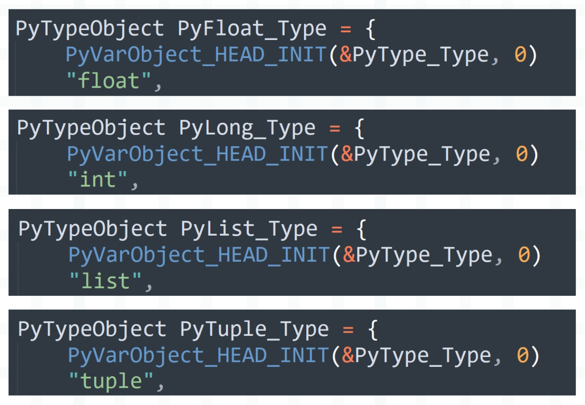
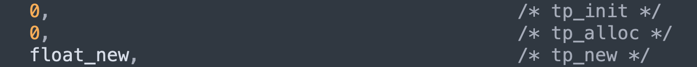
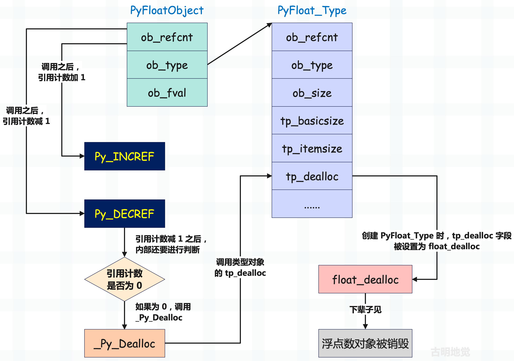
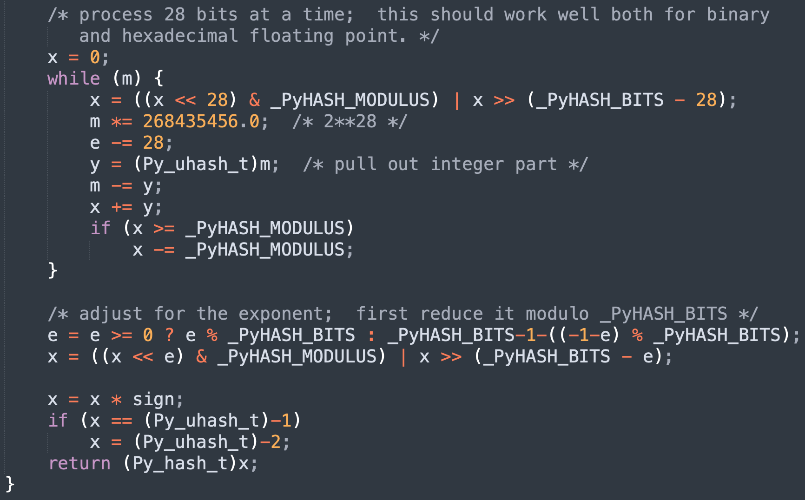

大家好，我是古明地觉，从今天开始我将和大家一起剖析 Python 解释器源码。
毫无疑问，Python 已经成为当下最主流的语言之一，如果你只是会用，那么很难和其他人拉开差距。但如果你知道 Python 解释器的底层原理，比如：
- 列表、字典、生成器等数据结构是怎么实现的；
- GIL 如何限制多线程只能同时使用一个核；
- 虚拟机是如何执行字节码的；
- Python 的垃圾回收又是怎么一回事；
- ······
那么你在面试的时候一定能让面试官眼前一亮，并且也能写出更好、更优雅的代码，这也是我们为什么要剖析 Python 解释器源码。可 Python 解释器的源码行数有五十多万行，该怎么入手呢？不用担心，本系列就来抽丝剥茧，带你近距离观察 Python 解释器这座宏伟大厦。
注：官方 Python 解释器由 C 语言编写，我们称之为 CPython。想要读懂它，需要有一定的 C 语言基础，当然我也会给出详细的注释。
本系列力求详细、精致，在介绍源码时会给出大量的注释和清晰的图表，并且我不仅仅会介绍源码实现，还会穿插大量的 Python 普通知识。因为 Python 解释器由 C 语言编写，想要读懂它，需要有一定的 C 语言基础。而本系列则确保，不管你 C 语言的水平如何，读了之后都能有所收获。
欢迎大家关注我的公众号：古明地觉的编程教室。

如果觉得文章对你有所帮助，也可以请作者吃个馒头，Thanks♪(･ω･)ﾉ。

CPython 源码结构
工欲善其事，必先利其器，在剖析源码之前，要先将它下载下来，并熟悉里面的结构。我们登录官网下载 CPython，本系列剖析的版本是 3.8.8，你可以点击此链接进行下载。
压缩包下载下来之后解压，即可得到整个 CPython 工程项目，我们看看它长什么样子？

以上便是 CPython3.8.8 源码结构，我们解释一下每个目录的作用。
Doc 目录
存储 Python 文档的源文件（.rst），用于编译之后生成官方文档。
Grammar 目录
负责定义 Python 的语法规则。
Include 目录
包含 Python 所有公开的头文件，这些文件定义了 Python 的 C API，在编写扩展模块和嵌入式开发时会用到。
Lib 目录
Python 的标准库，对于那些不影响性能的模块会用 Python 编写，然后放在 Lib 目录下面。
Modules 目录
Python 的内置库，这些库都是用 C 编写的，编译之后会内嵌在解释器里面。我们举个例子：
import random, _random
import re, _sre
import io, _io
import ast, _ast
以 random 为例，它是用来生成随机数的，和性能密切相关。所以它的核心功能由 C 编写，编译之后内嵌在解释器里，模块名为 _random。只不过 Python 又封装了一个 random，在内部会导入 _random，像 re 和 _sre、asyncio 和 _asyncio 都是类似的关系。
Modules 目录里面实现了大量和性能相关的模块，比如 sys、time、gc 等等，我们后续再聊。
Objects 目录
包含 Python 内置数据结构的底层实现，像字典、列表、元组、函数等，底层实现都定义在 Objects 目录中。
Parser 目录
负责 Python 代码的编译，虽然 Python 是解释型语言，但也是要经过编译的。编译的结果为 PyCodeObject 对象，它里面包含了要执行的字节码，编译完之后会交给虚拟机执行。
所以 Python 解释器 = Python 编译器 + Python 虚拟机。
Python 目录
Python 虚拟机的具体实现，字节码的执行、执行环境的管理等都在里面。
Mac 目录
用于 Mac OS X 平台的特定工具和脚本。
Misc 目录
包含各种杂项文件，如配置脚本、工具等。
PC 目录
专为 Windows 平台编写的配置文件和特定扩展。
PCbuild 目录
用于在 Windows 上编译 Python 的项目文件。
Programs 目录
包含 Python 其它可执行文件（如 IDLE）的源代码。
Tools 目录
包含用 Python 编写的各种脚本和工具，帮助开发和维护 Python。
以上就是 CPython 的源码结构，对它有一个基本的认识有助于我们后续的源码学习。
解释器、编译器、虚拟机
我们上面说了，Python 解释器 = Python 编译器 + Python 虚拟机，当解释器执行 py 文件时都经历了哪些过程呢？

Read File、Scanner、Parser、Compiler 都是由 Python 编译器负责的，Code Eval 则由 Python 虚拟机负责。
因此 Python 虽然是解释型语言，但也有编译的过程。源代码会被编译器编译成 PyCodeObject 对象，然后再交给虚拟机来执行。而之所以要存在编译，是为了让虚拟机能更快速地执行，比如在编译阶段常量都会提前分配好，而且还可以尽早检测出语法上的错误。
而 Python 编译器和 Python 虚拟机组合起来，便是 Python 解释器。

如果你了解 Java，那么应该知道 Java 也有编译器和虚拟机。只不过 Java 的编译器和虚拟机是分开的，而 Python 则是整合在一起的。
不过在后续介绍 Python 源码的时候，我们暂不涉及 Python 编译器的部分，也就是 Parser 目录里面的代码不做分析，因为涉及到编译原理。而且编译这一过程也不是 Python 语言独有的，任何一门编程语言、当然还有 SQL 都会涉及到编译。所以探究 Python 代码的编译过程没太大意义，我们的重点是 Python 代码的编译结果，以及虚拟机是如何执行的？
小结
本文就说到这里，赶快下载 Python 3.8 源码，来和我一起学习 Python 吧（ヾ(◍°∇°◍)ﾉﾞ）。
欢迎大家关注我的公众号：古明地觉的编程教室。
如果觉得文章对你有所帮助，也可以请作者吃个馒头，Thanks♪(･ω･)ﾉ。
Python 中一切皆对象
在学习 Python 的时候，你肯定听过这么一句话：Python 中一切皆对象。没错，在 Python 世界里，一切都是对象。整数是一个对象、字符串是一个对象、字典是一个对象，甚至 int, str, list 以及我们使用 class 关键字自定义的类，它们也是对象。
像 int, str, list 等基本类型，以及自定义的类，由于它们可以表示类型，因此我们称之为类型对象；类型对象实例化得到的对象，我们称之为实例对象。但不管是哪种对象，它们都属于对象。因此 Python 将面向对象理念贯彻的非常彻底，面向对象中的类和对象在 Python 中都是通过对象实现的。
在面向对象理论中，存在着类和对象两个概念，像 int、dict、tuple、以及使用 class 关键字自定义的类型对象实现了面向对象理论中类的概念，而 123、3.14、"string" 等实例对象则实现了面向对象理论中对象的概念。但在 Python 里面，面向对象中的类和对象都是通过对象实现的。
我们举个例子：
# dict 是一个类，因此它属于类型对象
# 类型对象实例化得到的对象属于实例对象
print(dict)
"""
<class 'dict'>
"""
print(dict(a=1, b=2))
"""
{'a': 1, 'b': 2}
"""
因此可以用一张图来描述面向对象在 Python 中的体现。
而如果想查看一个对象的类型，可以使用 type，或者通过对象的 __class__ 属性。
data = [1, 2, 3]
# 查看类型
print(type(data))
"""
<class 'list'>
"""
print(data.__class__)
"""
<class 'list'>
"""
如果想判断一个对象是不是指定类型的实例对象，可以使用 isinstance。
data = [1, 2, 3]
# 判断是不是指定类型的实例对象
print(isinstance(data, list))
"""
True
"""
但是问题来了，按照面向对象的理论来说，对象是由类实例化得到的，这在 Python 中也是适用的。既然是对象，那么就必定有一个类来实例化它，换句话说对象一定要有类型。至于一个对象的类型是什么，就看这个对象是被谁实例化的，被谁实例化，那么类型就是谁，比如列表的类型是 list，字典的类型是 dict 等等。
而 Python 中一切皆对象，所以像 int, str, tuple 这些内置的类对象也是具有相应的类型的，那么它们的类型又是谁呢？使用 type 查看一下就知道了。
print(type(int)) # <class 'type'>
print(type(str)) # <class 'type'>
print(type(dict)) # <class 'type'>
print(type(type)) # <class 'type'>
我们看到类型对象的类型，无一例外都是 type。而 type 我们也称其为元类，表示类型对象的类型。至于 type 本身，它的类型还是 type，所以它连自己都没放过，把自己都变成自己的对象了。
因此在 Python 中，你能看到的任何对象都是有类型的，可以使用 type 查看，也可以获取该对象的 __class__ 属性查看。所以：实例对象、类型对象、元类，Python 中任何一个对象都逃不过这三种身份。
到这里可能有人会发现一个有意思的点，我们说 int 是一个类对象，这显然是没有问题的。因为站在整数（比如 123）的角度上，int 是一个不折不扣的类对象；但如果站在 type 的角度上呢？显然我们又可以将 int 理解为实例对象，因此 class 具有二象性。
至于 type 也是同理，虽然它是元类，但本质上也是一个类对象。
注：不仅 type 是元类，那些继承了 type 的类也可以叫做元类。
然后 Python 中还有一个关键的类型（对象），叫做 object，它是所有类型对象的基类。不管是什么类，内置的类也好，我们自定义的类也罢，它们都继承自 object。因此 object 是所有类型对象的基类、或者说父类。
那如果我们想获取一个类都继承了哪些基类，该怎么做呢？方式有三种：
class A: pass
class B: pass
class C(A): pass
class D(B, C): pass
# 首先 D 继承自 B 和 C, C 又继承 A
# 我们现在要来查看 D 继承的父类
# 方法一: 使用 __base__
print(D.__base__)
"""
<class '__main__.B'>
"""
# 方法二: 使用 __bases__
print(D.__bases__)
"""
(<class '__main__.B'>, <class '__main__.C'>)
"""
# 方法三: 使用 __mro__
print(D.__mro__)
"""
(<class '__main__.D'>, <class '__main__.B'>,
<class '__main__.C'>, <class '__main__.A'>,
<class 'object'>)
"""
- __base__：如果继承了多个类，那么只显示继承的第一个类，没有显式继承则返回 <class 'object'>
- __bases__：返回一个元组，会显示所有直接继承的父类，没有显式继承则返回 (<class 'object'>,)
- __mro__: mro（Method Resolution Order）表示方法查找顺序，会从自身出发，找到最顶层的父类。因此返回自身、继承的基类、以及基类继承的基类，一直找到 object
而如果想查看某个类型是不是另一个类型的子类，可以通过 issubclass。
print(issubclass(str, object))
"""
True
"""
因此，我们可以得出以下两个结论：
- type 站在类型金字塔的最顶端，任何一个对象按照类型追根溯源，最终得到的都是 type；
- object 站在继承金字塔的最顶端，任何一个类型对象按照继承关系追根溯源，最终得到的都是 object；
但要注意的是，我们说 type 的类型还是 type，但 object 的基类则不再是 object，而是 None。
print(type.__class__) # <class 'type'>
# 注：以下打印结果容易让人产生误解
# 它表达的含义是 object 的基类为空
# 而不是说 object 继承 None
print(object.__base__) # None
但为什么 object 的基类是 None，而不是它自身呢？其实答案很简单，Python 在查找属性或方法的时候，自身如果没有的话，会按照 __mro__ 指定的顺序去基类中查找。所以继承链一定会有一个终点，否则就会像没有出口的递归一样出现死循环了。
我们用一张图将对象之间的关系总结一下：

- 实例对象的类型是类型对象，类型对象的类型是元类；
- 所有类型对象的基类都收敛于 object；
- 所有对象的类型都收敛于 type；
因此 Python 算是将一切皆对象的理念贯彻到了极致，也正因为如此，Python 才具有如此优秀的动态特性。
但是还没结束，我们再重新审视一下上面那张图，会发现里面有两个箭头看起来非常的奇怪。object 的类型是 type，type 又继承了 object。
print(type.__base__) # <class 'object'>
print(object.__class__) # <class 'type'>
因为 type 是所有类的元类，而 object 是所有类的基类，这就说明 type 要继承自 object，而 object 的类型是 type。很多人都会对这一点感到奇怪，这难道不是一个先有鸡还是先有蛋的问题吗？答案不是的，这两个对象是共存的，它们之间的定义是互相依赖的。而具体是怎么一回事，我们后续分析。
变量其实是指针
Python 的变量只是一个名字，如果站在 C 语言的角度来看，那么就是一个指针。所以 Python 的变量保存的其实是对象的内存地址，或者说指针，而指针指向的内存存储的才是对象。
所以在 Python 中，我们都说变量指向了某个对象。在其它静态语言中，变量相当于是为某块内存起的别名，获取变量等于获取这块内存所存储的值。而 Python 中变量代表的内存所存储的不是对象，而是对象的指针（或者说引用）。
我们举例说明，看一段 C 代码。
#include <stdio.h>
void main()
{
int a = 666;
printf("address of a = %p\n", &a);
a = 667;
printf("address of a = %p\n", &a);
}
编译执行一下：

赋值前后地址都是 0x7fff9eda521c，没有变化，再来看一段 Python 代码。
a = 666
print(hex(id(a))) # 0x7febf803a3d0
a = 667
print(hex(id(a))) # 0x7fec180677b0
我们看到 Python 里面输出的地址发生了变化，下面分析一下原因。
首先在 C 中，创建一个变量的时候必须规定好类型，比如 int a = 666，那么变量 a 就是 int 类型，以后在所处的作用域中就不可以变了。如果这时候再设置 a = 777，那么等于是把内存中存储的 666 换成 777，a 的地址和类型是不会变化的。
而在 Python 中，a = 666 等于是先开辟一块内存，存储的值为 666，然后让变量 a 指向这片内存，或者说让变量 a 保存这块内存的地址。然后 a = 777 的时候，再开辟一块内存，然后让 a 指向存储 777 的内存，由于是两块不同的内存，所以它们的地址是不一样的。

所以 Python 的变量只是一个和对象关联的名字，它代表的是对象的指针。换句话说 Python 的变量就是个便利贴，可以贴在任何对象上，一旦贴上去了，就代表这个对象被引用了。
值传递？引用传递？
再来看看变量之间的传递，在 Python 中是如何体现的。
a = 666
print(hex(id(a))) # 0x1f4e8ca7fb0
b = a
print(hex(id(b))) # 0x1f4e8ca7fb0
我们看到打印的地址是一样的，再用一张图解释一下。

a = 666 的时候，先开辟一份内存，再让 a 存储对应内存的地址；然后 b = a 的时候，会把 a 拷贝一份给 b，所以 b 和 a 存储了相同的地址，它们都指向了同一个对象。
因此说 Python 是值传递、或者引用传递都是不准确的，准确的说 Python 是变量的值传递，对象的引用传递。因为 Python 的变量可以认为是 C 的一个指针，在 b = a 的时候，等于把 a 指向的对象的地址（a 本身）拷贝一份给 b，所以对于变量来说是值传递；然后 a 和 b 又都是指向对象的指针，因此对于对象来说是引用传递。
在这个过程中，对象没有重复创建，它只是多了一个引用。
另外还有最关键的一点，Python 的变量是一个指针，当传递变量的时候，传递的是指针；但是在操作变量的时候，会操作变量指向的内存。所以 id(a) 获取的不是 a 的地址，而是 a 指向的内存的地址（在底层其实就是 a 本身）；同理 b = a，是将 a 本身，或者说将 a 存储的、指向某个具体的对象的地址传递给了 b。
另外在 C 的层面，显然 a 和 b 属于指针变量，那么 a 和 b 有没有地址呢？显然是有的，只不过在 Python 中是获取不到的，解释器只允许获取对象的地址。
我们再举个函数的例子：
def some_func(num):
print("address of local num", hex(id(num)))
num = 667
print("address of local num", hex(id(num)))
num = 666
print("address of global num", hex(id(num)))
some_func(num)
"""
address of global num 0x2356cd698d0
address of local num 0x2356cd698d0
address of local num 0x2356c457f90
"""
函数的参数也是一个变量，所以 some_func(num) 其实就是把全局变量 num 存储的对象的地址拷贝一份给局部变量 num，所以两个 num 指向了同一个对象，打印的地址相同。然后函数内部又执行了 num = 667，相当于让局部变量指向新的对象，或者说保存新对象的地址，因此打印的结果发生变化。
变量有类型吗？
当提到类型时，这个类型指的是变量的类型还是对象的类型呢？不用想，肯定是对象的类型。因为 Python 的变量是个指针，操作指针会自动操作它指向的内存，所以使用 type(a) 查看的其实是变量 a 指向的对象的类型。
那么问题来了，我们在创建变量的时候，并没有显式地指定类型啊，那么解释器是如何判断一个变量指向什么类型的数据呢？答案是：解释器是通过靠猜的方式，通过赋的值（或者说变量引用的值）来推断类型。
因此在 Python 中，如果你想创建一个变量，那么必须在创建变量的时候同时赋值，否则解释器就不知道这个变量指向的数据是什么类型。所以 Python 是先创建相应的值，这个值在 C 中对应一个结构体，结构体里面有一个字段专门用来记录该值对应的类型，因此在 Python 中，类型是和对象绑定的，而不是和变量。当创建完值之后，再让这个变量指向它，所以 Python 中是先有值后有变量。
但在 C 里面显然不是这样的，因为 C 的变量代表的内存所存储的就是具体的值，所以在 C 里面可以直接声明一个变量的同时不赋值。因为 C 要求声明变量时必须指定类型，所以变量声明之后，其类型和内存大小就已经固定了。
而 Python 的变量存的是个地址，它只是指向了某个对象，所以由于其便利贴的特性，可以贴在任意对象上面。但是不管贴在哪个对象，都必须先有对象才可以，不然变量贴谁去。
另外，尽管 Python 在创建变量的时候不需要指定类型，但 Python 是强类型语言，而且是动态强类型。
小结
以上我们就聊了聊 Python 的变量和对象，核心就在于：变量保存的不是对象本身，而是对象的内存地址，站在 C 的角度上看变量就是一个指针。
尽管 Python 一切皆对象，但你拿到的都是对象的指针，变量是一个指针，函数是一个指针，元组、列表、字典里面存储的还是指针。我们可以想象一下列表，它底层是基于数组实现的，由于 C 数组要求里面每个元素的类型和大小都相同，因此从这个角度上讲，列表内部存储的只能是指针。
欢迎大家关注我的公众号：古明地觉的编程教室。
如果觉得文章对你有所帮助，也可以请作者吃个馒头，Thanks♪(･ω･)ﾉ。
楔子
在程序开发中，我们每时每刻都在创建对象，那到底什么是对象呢？
其实一个对象就是一片被分配的内存空间，空间可以是连续的，也可以是不连续的。然后空间里面存储了指定的数据，并提供了操作数据的一些功能方法。而按照是否可变和内存大小是否固定，我们可以将对象进行如下分类。
- 可变对象和不可变对象；
- 定长对象和变长对象；
下面来详细解释一下。
可变对象和不可变对象
不可变对象一旦创建，其内存中存储的值就不可以再修改了。如果想修改，只能创建一个新的对象，然后让变量指向新的对象，所以前后的地址会发生改变。而可变对象在创建之后，其存储的值可以动态修改。
像整数就是一个不可变对象。
>>> a = 666
>>> id(a)
140176818069136
>>> a += 1
>>> id(a)
140176818068368
我们看到执行 a += 1 操作之后，前后地址发生了变化，所以整数不支持本地修改，因此是一个不可变对象；

原来 a = 666，而我们说操作一个变量等于操作这个变量指向的内存，所以 a += 1 会将 a 指向的整数对象 666 和 1 进行加法运算，得到 667。因此会开辟新的空间来存储 667，然后让 a 指向这片新的空间。至于原来的 666 所占的空间怎么办，解释器会看它的引用计数，如果不为 0 代表还有变量引用（指向）它，如果为 0 则证明没有变量引用了，所以会被回收。
关于引用计数，我们后面会详细说，目前只需要知道，如果对象被变量引用了，那么该对象的引用计数就会加 1。有几个变量引用，那么它的引用计数就是几。
除了整数之外，浮点数、字符串、布尔值等等，都是不可变对象，它们的值不能本地修改。
然后是可变对象，像列表、字典、集合等都是可变对象，它们支持动态修改。
这里先多提一句，Python 对象本质上就是 C 的 malloc 函数为结构体实例在堆区申请的一块内存。Python 的任何对象在 C 中都会对应一个结构体，这个结构体除了存放具体的值之外，还存放了一些额外信息，具体细节在后续剖析内置对象的时候会细说。
在上一篇文章中我们说到，列表、元组、集合这些容器的内部存储的不是具体的对象，而是对象的指针。比如：lst = [1, 2, 3]，你以为列表存储的是三个整数对象吗？其实不是的，它存储的是三个整数对象的指针，当我们获取 lst[0] 的时候，拿到的是一个指针，但是操作（比如 print）的时候会自动操作指针指向的内存。
因为 Python 底层是用 C 实现的，所以列表的实现必然要借助 C 的数组。可 C 数组里面的元素的类型是一致的，但列表却可以存放任意的元素，因此从这个角度上讲，列表里面的元素就不可能是对象，因为不同的对象在底层对应的结构体是不同的，所以元素只能是指针。
可能有人又好奇了，不同对象的指针也是不同的啊，是的，但 C 指针是可以转化的。Python 底层将所有对象的指针，都转成了 PyObject 类型的指针，这样不就是同一种类型的指针了吗？关于这个 PyObject，它是我们后面要剖析的重中之重，贯穿了整个系列。不过目前只需要知道列表（还有其它容器）存储的元素、以及 Python 的变量，它们都是一个泛型指针 PyObject *。
>>> lst = [1, 2, 3]
>>> id(lst)
140176818170432
>>> lst.append(4)
>>> lst.append(5)
>>> lst
[1, 2, 3, 4, 5]
>>> id(lst)
140176818170432
我们看到列表在添加元素的时候，前后地址并没有改变。列表在 C 中是通过 PyListObject 结构体实现的，我们在介绍列表的时候会细说。这个 PyListObject 内部除了一些基本信息之外，还维护了一个 PyObject 的二级指针，指向了 PyObject * 类型的数组的首元素。

显然图中的指针数组用来存储具体的对象的指针，每一个指针都指向了相应的对象（这里是整数对象）。
然后我们还可以看到一个现象，那就是列表在底层是分开存储的，因为 PyListObject 结构体实例并没有存储相应的指针数组，而是存储了一个二级指针。显然添加、删除、修改元素等操作，都是通过这个二级指针来间接操作指针数组。
因为一个对象一旦被创建（任何语言都是如此），那么它在内存中的大小就不可以变了。所以这就意味着那些可以容纳可变长度数据的可变对象，要在内部维护一个指针，指针指向一片内存区域，该区域存放具体的数据。如果空间不够了，那就申请一片更大的内存区域，然后将元素依次拷贝过去，再让指针指向新的内存区域。而列表的底层也是这么做的，其内部并没有直接存储具体的指针数组，而是存储了指向指针数组首元素的二级指针。
那么问题来了，为什么要这么做？
其实很好理解，遵循这样的规则可以使通过指针维护对象的工作变得非常简单。一旦允许对象的大小可在运行期改变，那么我们就要考虑如下场景。
在内存中有对象 A，并且其后面紧跟着对象 B。如果在运行的某个时候，A 的大小增大了，这就意味着必须将 A 整个移动到内存中的其他位置，否则 A 增大的部分会覆盖掉原本属于 B 的数据。但要将 A 移动到内存的其他位置，那么所有指向 A 的指针就必须立即得到更新。可想而知这样的工作是多么的繁琐，因此通过在可变对象的内部维护一个指针就变得简单多了。
定长对象和变长对象
所谓定长和变长，取决于对象所占的内存大小是否固定，举个例子。
>>> import sys
>>> sys.getsizeof("")
49
>>> sys.getsizeof("hello")
54
>>> sys.getsizeof("hello world")
60
>>> sys.getsizeof(1.0)
24
>>> sys.getsizeof(3.14)
24
>>> sys.getsizeof((2 << 30) + 3.14)
24
>>>
我们看到字符串的长度不同，所占的内存也不同，像这种内存大小不固定的对象，我们称之为变长对象；而浮点数所占的内存都是一样的，像这种内存大小固定的对象，我们称之为定长对象。
至于 Python 如何计算对象所占的内存，我们在剖析具体对象的时候会说，因为这涉及到底层对应的结构体。
所以变长对象的特点是：同一个类型的实例对象，如果值不同，那么占用的内存大小不同。像字符串、列表、元组、字典等，它们毫无疑问都是变长对象。值得一提的是，整数也是变长对象，因为 Python 整数的值在底层是通过数组维护的，后续介绍整数实现的时候再聊。
而定长对象的特点是：同一个类型的实例对象，不管值是多少，占用的内存大小始终是固定的，比如浮点数。因为 Python 的浮点数的值在 C 中是通过一个 double 来维护的。而 C 里面值的类型一旦确定，那么内存大小就不变了，所以 Python 浮点数的内存大小也是不变的。
但既然类型固定，内存大小固定，那么范围肯定是有限的。所以当浮点数不断增大，会牺牲精度来进行存储。

如果实在过大，则抛出 OverFlowError。

当然除了浮点数之外，布尔值、复数等也属于定长对象，它们占用的内存大小是固定的。
小结
以上我们就分析了对象的种类，对象可以被分为可变对象和不可变对象，以及变长对象和定长对象。
- 不可变对象：对象不支持本地修改；
- 可变对象：对象支持本地修改；
- 变长对象：对象维护的值不同，占用的内存大小也不同；
- 定长对象：占用的内存大小始终固定；
欢迎大家关注我的公众号：古明地觉的编程教室。
如果觉得文章对你有所帮助，也可以请作者吃个馒头，Thanks♪(･ω･)ﾉ。
楔子
在前面的文章中我们说到，面向对象理论中的类和对象这两个概念在 Python 内部都是通过对象实现的。类是一种对象，称为类型对象，类实例化得到的也是对象，称为实例对象。但是对象在 Python 的底层是如何实现的呢？Python 解释器是基于 C 语言编写的 ，但 C 并不是一个面向对象的语言，那么它是如何实现 Python 的面向对象的呢？
首先对于人的思维来说，对象是一个比较形象的概念，但对于计算机来说，对象却是一个抽象的概念。它并不能理解这是一个整数，那是一个字符串，计算机所知道的一切都是字节。通常的说法是：对象是数据以及基于这些数据所能进行的操作的集合。在计算机中，一个对象实际上就是一片被分配的内存空间，这些内存可能是连续的，也可能是离散的。
而 Python 的任何对象在 C 中都对应一个结构体实例，在 Python 中创建一个对象，等价于在 C 中创建一个结构体实例。所以 Python 的对象，其本质就是 C 的 malloc 函数为结构体实例在堆区申请的一块内存。
下面我们就来分析一下对象在 C 中是如何实现的。
对象的地基：PyObject
Python 一切皆对象，而所有的对象都拥有一些共同的信息（也叫头部信息），这些信息位于 PyObject 中，它是 Python 对象机制的核心，下面来看看它的定义。
// Include/object.h
typedef struct _object {
_PyObject_HEAD_EXTRA
Py_ssize_t ob_refcnt;
struct _typeobject *ob_type;
} PyObject;
首先解释一下结构体里面的 _PyObject_HEAD_EXTRA，这是一个宏，定义如下。
// Include/object.h
// 如果定义了宏 Py_TRACE_REFS
#ifdef Py_TRACE_REFS
// 那么 _PyObject_HEAD_EXTRA 会展开成如下两个字段
// 显然程序中创建的对象会组成一个双向链表
#define _PyObject_HEAD_EXTRA \
struct _object *_ob_next; \
struct _object *_ob_prev;
// 用于将 _ob_next 和 _ob_prev 初始化为空
#define _PyObject_EXTRA_INIT 0, 0,
// 否则说明没有定义宏 Py_TRACE_REFS
// 那么 _PyObject_HEAD_EXTRA 和 _PyObject_EXTRA_INIT 不会有任何作用
#else
#define _PyObject_HEAD_EXTRA
#define _PyObject_EXTRA_INIT
#endif
所以如果定义了宏 Py_TRACE_REFS，那么展开之后 PyObject 就是下面这样。
typedef struct _object {
PyObject *_ob_next;
PyObject *_ob_prev;
Py_ssize_t ob_refcnt;
struct _typeobject *ob_type;
} PyObject;
但 Py_TRACE_REFS 一般只在编译调试的时候会开启，我们从官网下载的都是 Release 版本，不包含这个宏，因此这里我们也不考虑它。所以 PyObject 最终就等价于下面这个样子：
typedef struct _object {
Py_ssize_t ob_refcnt;
struct _typeobject *ob_type;
} PyObject;
所以 PyObject 里面包含了两个字段，分别是 ob_refcnt 和 ob_type。
ob_refcnt 表示对象的引用计数，当对象被引用时，ob_refcnt 会自增 1；引用解除时，ob_refcnt 会自减 1。而当对象的引用计数为 0 时，则会被回收。
那么在哪些情况下，引用计数会加 1 呢？哪些情况下，引用计数会减 1 呢？
引用计数加 1 的情况：
- 对象被创建：比如 name = "古明地觉"，此时对象就是 "古明地觉" 这个字符串，创建成功时它的引用计数为 1；
- 变量传递使得对象被新的变量引用：比如 name2 = name；
- 引用该对象的某个变量作为参数传递到一个函数或者类中：比如 func(name)；
- 引用该对象的某个变量作为元组、列表、集合等容器的元素：比如 lst = [name]；
引用计数减 1 的情况：
- 引用该对象的变量被显式地销毁：del name；
- 引用该对象的变量指向了别的对象：name = ""；
- 引用该对象的变量离开了它的作用域，比如函数的局部变量在函数执行完毕时会被删除；
- 引用该对象的变量所在的容器被销毁，或者变量从容器里面被删除；
因为变量只是一个和对象绑定的符号，更接地气一点的说法就是，变量是个便利贴，贴在指定的对象上面。所以 del 变量 并不是删除变量指向的对象，而是删除变量本身，可以理解为将对象身上的便利贴给撕掉了，其结果就是对象的引用计数减一。至于对象是否被删除（回收）则是解释器判断其引用计数是否为 0 决定的，为 0 就删，不为 0 就不删，就这么简单。
然后看一下字段 ob_refcnt 的类型，该类型为 Py_ssize_t，它是 ssize_t 的别名，在 64 位机器上等价于 int64。因此一个对象的引用计数不能超过 int64 所能表示的最大范围。但很明显，如果不费九牛二虎之力去写恶意代码，是不可能超过这个范围的。
说完了 ob_refcnt，再来看看 PyObject 的另一个字段 ob_type，相信你能猜到它的含义。对象是有类型的，类型对象描述实例对象的行为，而 ob_type 存储的便是对应的类型对象的指针，所以类型对象在底层是一个 struct _typeobject 结构体实例。另外 struct _typeobject 还有一个类型别名叫 PyTypeObject，关于类型对象，我们后续再聊。
以上就是 PyObject，它的定义非常简单，就一个引用计数和一个类型对象的指针。这两个字段的大小都是 8 字节，所以一个 PyObject 结构体实例的大小是 16 字节。由于 PyObject 是所有对象都具有的，换句话说就是所有对象对应的结构体都内嵌了 PyObject，因此你在 Python 里面看到的任何一个对象都有引用计数和类型这两个属性。
>>> num = 666
>>> sys.getrefcount(num)
2
>>> num.__class__
<class 'int'>
>>> sys.getrefcount(sys)
56
>>> sys.__class__
<class 'module'>
>>> sys.getrefcount(sys.path)
2
>>> sys.path.__class__
<class 'list'>
>>> def foo(): pass
...
>>> sys.getrefcount(foo)
2
>>> foo.__class__
<class 'function'>
引用计数可以通过 sys.getrefcount 函数查看，类型可以通过 type(obj) 或者 obj.__class__ 查看。
可变对象的地基：PyVarObject
PyObject 是所有对象的核心，它包含了所有对象都共有的信息，但是还有那么一个属性虽然不是每个对象都有，但至少有一大半的对象会有，能猜到是什么吗？
之前说过，对象根据所占的内存是否固定，可以分为定长对象和变长对象，而变长对象显然有一个长度的概念，比如字符串、列表、元组等等。即便是相同类型的实例对象，但是长度不同，所占的内存也是不同的。比如字符串内部有多少个字符，元组、列表内部有多少个元素，显然这里的多少也是 Python 中很多对象的共有特征。虽然不像引用计数和类型那样是每个对象都必有的，但也是绝大部分对象所具有的。
所以针对变长对象，Python 底层也提供了一个结构体，因为 Python 里面很多都是变长对象。
// Include/object.h
typedef struct {
PyObject ob_base;
Py_ssize_t ob_size;
} PyVarObject;
我们看到 PyVarObject 实际上是 PyObject 的一个扩展，它在 PyObject 的基础上添加了一个 ob_size 字段，用于记录内部的元素个数。比如列表，列表的 ob_size 维护的就是列表的元素个数，插入一个元素，ob_size 会加 1，删除一个元素，ob_size 会减 1。
因此使用 len 函数获取列表的元素个数是一个时间复杂度为 O(1) 的操作，因为 ob_size 始终和内部的元素个数保持一致，所以会直接返回 ob_size。
所有的变长对象都拥有 PyVarObject，而所有的对象都拥有 PyObject，这就使得在 Python 中，对对象的引用变得非常统一。我们只需要一个 PyObject * 就可以引用任意一个对象，而不需要管这个对象实际是一个什么样的对象。
所以 Python 变量、以及容器内部的元素，本质上都是一个 PyObject *。而在操作变量的时候，也要先根据 ob_type 字段判断指向的对象的类型，然后再寻找该对象具有的方法，这也是 Python 效率慢的原因之一。
由于 PyObject 和 PyVarObject 要经常使用，所以底层提供了两个宏，方便定义。
// Include/object.h
#define PyObject_HEAD PyObject ob_base;
#define PyObject_VAR_HEAD PyVarObject ob_base;
比如定长对象浮点数，在底层对应的结构体为 PyFloatObject，它只需在 PyObject 的基础上再加一个 double 即可。
typedef struct {
// 等价于 PyObject ob_base;
PyObject_HEAD
double ob_fval;
} PyFloatObject;
再比如变长对象列表，在底层对应的结构体是 PyListObject，所以它需要在 PyVarObject 的基础上再加一个指向指针数组首元素的二级指针和一个容量。
typedef struct {
// 等价于 PyVarObject ob_base;
PyObject_VAR_HEAD
PyObject **ob_item;
Py_ssize_t allocated;
} PyListObject;
这上面的每一个字段都代表什么，我们之前提到过，当然这些内置的数据结构后续还会单独剖析。
对于 PyListObject，里面的 ob_item 就是指向指针数组首元素的二级指针，而 allocated 表示已经分配的容量，一旦添加元素的时候发现 ob_size 自增 1 之后会大于 allocated，那么解释器就知道数组已经满了（容量不够了）。于是会申请一个长度更大的指针数组，然后将旧数组内部的元素按照顺序逐个拷贝到新数组里面，并让 ob_item 指向新数组的首元素，这个过程就是列表的扩容，后续在剖析列表的时候还会细说。
所以我们看到列表在添加元素的时候，地址是不会改变的，即使容量不够了也没关系，直接让 ob_item 指向新的数组就好了，至于 PyListObject 对象（列表）本身的地址是不会变化的。
小结
PyObject 是 Python 对象的核心，因为 Python 对象在 C 的层面就是一个结构体，并且所有的结构体都嵌套了 PyObject 结构体。而 PyObject 内部有引用计数和类型这两个字段，因此我们可以肯定的说 Python 的任何一个对象都有引用计数和类型这两个属性。
另外大部分对象都有长度的概念，所以又引入了 PyVarObject，它在 PyObject 的基础上添加了一个 ob_size 字段，用于描述对象的长度。比如字符串内部的 ob_size 维护的是字符串的字符个数，元组、列表、集合等等，其内部的 ob_size 维护的是存储的元素个数，所以使用 len 函数获取对象长度是一个 O(1) 的操作。
欢迎大家关注我的公众号：古明地觉的编程教室。
如果觉得文章对你有所帮助，也可以请作者吃个馒头，Thanks♪(･ω･)ﾉ。
楔子
通过 PyObject 和 PyVarObject，我们看到了所有对象的公共信息以及变长对象的公共信息。任何一个对象，不管它是什么类型，内部必有引用计数（ob_refcnt）和类型指针（ob_type）。任何一个变长对象，不管它是什么类型，内部除了引用计数和类型指针之外，还有一个表示元素个数的 ob_size。
显然目前没有什么问题，一切都是符合预期的，但是当我们顺着时间轴回溯的话，就会发现端倪。比如：
- 当在内存中创建对象、分配空间的时候，解释器要给对象分配多大的空间？显然不能随便分配，那么对象的内存信息在什么地方？
- 对象是可以执行相关操作的，解释器怎么知道某个对象支持哪些操作呢？再比如一个整数可以和一个整数相乘，一个列表也可以和一个整数相乘，即使是相同的操作，但不同类型的对象执行也会有不同的效果，那么此时解释器又是如何进行区分的？
想都不用想，这些信息肯定都在对象的类型对象中。因为占用的空间大小实际上是对象的一个元信息，这样的元信息和其所属类型是密切相关的，因此它一定会出现在与之对应的类型对象当中。至于支持的操作就更不用说了，我们平时自定义类的时候，功能函数都写在什么地方，显然都是写在类里面，因此一个对象支持的操作也定义在类型对象当中。
而将对象和它的类型对象关联起来的，毫无疑问正是该对象内部的 PyObject 的 ob_type 字段，也就是类型指针。我们通过对象的 ob_type 字段即可获取类型对象的指针，然后通过指针获取存储在类型对象中的某些元信息。
下面我们来看看类型对象在底层是怎么定义的。
解密 PyTypeObject
PyObject 的 ob_type 字段的类型是 PyTypeObject *，所以类型对象由 PyTypeObject 结构体负责实现，看一看它长什么样子。
// Include/cpython/object.h
typedef struct _typeobject {
PyObject_VAR_HEAD
const char *tp_name;
Py_ssize_t tp_basicsize, tp_itemsize;
destructor tp_dealloc;
Py_ssize_t tp_vectorcall_offset;
getattrfunc tp_getattr;
setattrfunc tp_setattr;
PyAsyncMethods *tp_as_async;
reprfunc tp_repr;
PyNumberMethods *tp_as_number;
PySequenceMethods *tp_as_sequence;
PyMappingMethods *tp_as_mapping;
hashfunc tp_hash;
ternaryfunc tp_call;
reprfunc tp_str;
getattrofunc tp_getattro;
setattrofunc tp_setattro;
PyBufferProcs *tp_as_buffer;
unsigned long tp_flags;
const char *tp_doc;
traverseproc tp_traverse;
inquiry tp_clear;
richcmpfunc tp_richcompare;
Py_ssize_t tp_weaklistoffset;
getiterfunc tp_iter;
iternextfunc tp_iternext;
struct PyMethodDef *tp_methods;
struct PyMemberDef *tp_members;
struct PyGetSetDef *tp_getset;
struct _typeobject *tp_base;
PyObject *tp_dict;
descrgetfunc tp_descr_get;
descrsetfunc tp_descr_set;
Py_ssize_t tp_dictoffset;
initproc tp_init;
allocfunc tp_alloc;
newfunc tp_new;
freefunc tp_free;
inquiry tp_is_gc;
PyObject *tp_bases;
PyObject *tp_mro;
PyObject *tp_cache;
PyObject *tp_subclasses;
PyObject *tp_weaklist;
destructor tp_del;
unsigned int tp_version_tag;
destructor tp_finalize;
vectorcallfunc tp_vectorcall;
Py_DEPRECATED(3.8) int (*tp_print)(PyObject *, FILE *, int);
#ifdef COUNT_ALLOCS
Py_ssize_t tp_allocs;
Py_ssize_t tp_frees;
Py_ssize_t tp_maxalloc;
struct _typeobject *tp_prev;
struct _typeobject *tp_next;
#endif
} PyTypeObject;
类型对象在底层对应的是 struct _typeobject，或者说 PyTypeObject，它保存了实例对象的元信息。
所以不难发现，无论是 int、str、dict 等内置类型，还是使用 class 关键字自定义的类型，它们在 C 的层面都是由 PyTypeObject 这个结构体实例化得到的，只不过内部字段的值不同，PyTypeObject 结构体在实例化之后得到的类型对象也不同。
然后我们来看看 PyTypeObject 里面的字段都代表啥含义，字段还是比较多的，我们逐一介绍。
PyObject_VAR_HEAD
宏，会被替换为 PyVarObject，所以类型对象是一个变长对象。因此类型对象也有引用计数和类型，这与我们前面分析的是一致的。
tp_name
对应 Python 中类型对象的 __name__ 属性，即类型对象的名称。
# 类型对象在底层对应的是 PyTypeObject 结构体实例
# 它的 tp_name 字段表示类型对象的名称
print(int.__name__) # int
# 动态创建一个类
A = type("我是 A", (object,), {})
print(A.__name__) # 我是 A
所以任何一个类型对象都有 __name__ 属性，也就是都有名称。
tp_basicsize，tp_itemsize
- tp_basicsize：表示创建实例对象所需的基本内存大小；
- tp_itemsize：如果对象是变长对象，并且元素保存在对应的结构体内部，比如元组，那么 tp_itemsize 表示内部每个元素的内存大小。如果是定长对象，或者虽然是变长对象，但结构体本身不保存数据，而是只保存了一个指针，那么 tp_itemsize 为 0；
tp_dealloc
析构函数，对应 Python 中类型对象的 __del__，会在实例对象被销毁时执行。
tp_vectorcall_offset
如果想调用一个对象，那么它的类型对象要定义 __call__ 函数。
class A:
def __call__(self, *args, **kwargs):
return "被调用了"
a = A()
# 如果调用 a，那么 type(a) 要定义 __call__ 函数
print(a())
"""
被调用了
"""
# 底层会转成如下逻辑
print(A.__call__(a))
"""
被调用了
"""
# 函数也是一个实例对象，它能被调用
# 说明 type(函数) 也一定实现了 __call__
def some_func(name, age):
return f"name: {name}, age: {age}"
# 函数的类型是 function
print(type(some_func))
"""
<class 'function'>
"""
# 调用函数
print(some_func("古明地觉", 17))
"""
name: 古明地觉, age: 17
"""
# 也可以这么做
print(type(some_func).__call__(some_func, "古明地觉", 17))
"""
name: 古明地觉, age: 17
"""
以上就是对象最通用的调用逻辑，但通用也意味着平庸，这种调用方式的性能是不高的。自定义类的实例对象还好，因为需要支持调用的场景不多，而函数则不同，尽管它也是实例对象，但它生下来就是要被调用的。如果函数调用也走通用逻辑的话，那么效率不高，因此 Python 从 3.8 开始引入了 vectorcall 协议，即矢量调用协议，用于优化和加速函数调用。相比常规调用，矢量调用具备如下优势：
- 避免创建临时元组来传递参数
- 减少参数打包/解包的开销
- 支持关键字参数的快速处理
总之当一个对象被调用时，如果它支持 vectorcall 协议，那么会通过 tp_vectorcall_offset 找到实现矢量调用的函数指针。
注意：vectorcall 函数指针定义在实例对象中，而 tp_vectorcall_offset 字段维护了 vectorcall 函数指针在实例对象中的偏移量，该偏移量用于定位到一个特定的函数指针，这个函数指针符合 vectorcall 协议。
如果类型对象的 tp_vectorcall_offset 为 0，表示其实例对象不支持矢量调用，因此会退化为常规调用，即通过类型对象的 __call__ 进行调用。
tp_getattr，tp_setattr
对应 Python 中类型对象的 __getattr__ 和 __setattr__，用于操作实例对象的属性。但这两个字段已经不推荐使用了，因为它要求在操作属性时，属性名必须为 C 字符串，以及不支持通过描述符协议处理属性。
所以这两个字段主要用于兼容旧版本，现在应该使用 tp_getattro 和 tp_setattro。
tp_as_number、tp_as_sequence、tp_as_mapping、tp_as_async
tp_as_number：实例对象为数值时，所支持的操作。这是一个结构体指针，指向的结构体中的每一个字段都是一个函数指针，指向的函数就是对象可以执行的操作，比如四则运算、左移、右移、取模等等。
tp_as_sequence：实例对象为序列时，所支持的操作，也是一个结构体指针。
tp_as_mapping：实例对象为映射时，所支持的操作，也是一个结构体指针。
tp_as_async：实例对象为协程时，所支持的操作，也是一个结构体指针。
tp_repr、tp_str
对应 Python 中类型对象的 __repr__ 和 __str__，用于控制实例对象的打印输出。
tp_hash
对应 Python 中类型对象的 __hash__，用于定义实例对象的哈希值。
tp_call
对应 Python 中类型对象的 __call__，用于控制实例对象的调用行为。当然这属于常规调用，而对象不仅可以支持常规调用，还可以支持上面提到的矢量调用（通过减少参数传递的开销，提升调用性能）。
但要注意的是，不管使用哪种调用协议，对象调用的行为必须都是相同的。因此一个对象如果支持矢量调用，那么它也必须支持常规调用，换句话说对象如果实现了 vectorcall，那么它的类型对象也必须实现 tp_call。
如果你在实现 vectorcall 之后发现它比 tp_call 还慢，那么你就不应该实现 vectorcall，因为实现 vectorcall 是有条件的，当条件不满足时性能反而会变差。
tp_getattro，tp_setattro
对应 Python 中类型对象的 __getattr__ 和 __setattr__。
tp_as_buffer
指向 PyBufferProcs 类型的结构体，用于共享内存。通过暴露出一个缓冲区，可以和其它对象共享同一份数据，因此当类型对象实现了 tp_as_buffer，我们也说其实例对象实现了缓冲区协议，举个例子。
import numpy as np
buf = bytearray(b"abc")
# 和 buf 共享内存
arr = np.frombuffer(buf, dtype="uint8")
print(arr) # [97 98 99]
# 修改 buf
buf[0] = 255
# 会发现 arr 也改变了，因为它和 buf 共用一块内存
print(arr) # [255 98 99]
所以 tp_as_buffer 主要用于那些自身包含大量数据，且需要允许其它对象直接访问的类型。通过实现缓冲区协议，其它对象可以直接共享数据，而无需事先拷贝，这在处理大型数据或进行高性能计算时非常有用。
关于缓冲区协议，后续还会详细介绍。
tp_flags
对应 Python 中类型对象的 __flags__，负责提供类型对象本身的附加信息，通过和指定的一系列标志位进行按位与运算，即可判断该类型是否具有某个特征。
那么标志位都有哪些呢？我们介绍几个常见的。
// Include/object.h
// 类型对象的内存是否是动态分配的
// 像内置的类型对象属于静态类，它们不是动态分配的
#define Py_TPFLAGS_HEAPTYPE (1UL << 9)
// 类型对象是否允许被继承
#define Py_TPFLAGS_BASETYPE (1UL << 10)
// 类型对象的实例对象是否参与垃圾回收
#define Py_TPFLAGS_HAVE_GC (1UL << 14)
// 类型对象是否是抽象基类
#define Py_TPFLAGS_IS_ABSTRACT (1UL << 20)
我们通过 Python 来演示一下。
# 是否是自定义的动态类
Py_TPFLAGS_HEAPTYPE = 1 << 9
class A:
pass
# 如果与运算的结果为真，则表示是动态类，否则不是
print(A.__flags__ & Py_TPFLAGS_HEAPTYPE)
"""
512
"""
print(int.__flags__ & Py_TPFLAGS_HEAPTYPE)
"""
0
"""
# 类型对象是否允许被继承
Py_TPFLAGS_BASETYPE = 1 << 10
# object 显然允许被继承，因此与运算的结果为真
print(object.__flags__ & Py_TPFLAGS_BASETYPE)
"""
1024
"""
# 但 memoryview 就不允许被继承
try:
class B(memoryview):
pass
except TypeError as e:
print(e)
"""
type 'memoryview' is not an acceptable base type
"""
print(memoryview.__flags__ & Py_TPFLAGS_BASETYPE)
"""
0
"""
# 类型对象的实例对象是否参与垃圾回收
Py_TPFLAGS_HAVE_GC = 1 << 14
# int 的实例对象（整数）不会产生循环引用，所以不会参与垃圾回收
print(int.__flags__ & Py_TPFLAGS_HAVE_GC)
"""
0
"""
# 但列表是会参与垃圾回收的
print(list.__flags__ & Py_TPFLAGS_HAVE_GC)
"""
16384
"""
# 类型对象是否是抽象基类
Py_TPFLAGS_IS_ABSTRACT = 1 << 20
from abc import ABCMeta, abstractmethod
# 显然 C 不是抽象基类，而 D 是
class C:
pass
class D(metaclass=ABCMeta):
@abstractmethod
def foo(self):
pass
print(C.__flags__ & Py_TPFLAGS_IS_ABSTRACT)
"""
0
"""
print(D.__flags__ & Py_TPFLAGS_IS_ABSTRACT)
"""
1048576
"""
所以这就是 tp_flags 的作用，它负责描述一个类型对象都具有哪些额外特征。
tp_doc
对应 Python 中类型对象的 __doc__。
class People:
"""以前我没得选"""
print(People.__doc__)
"""
以前我没得选
"""
这个比较简单。
tp_traverse，tp_clear
这两个字段是一对，负责参与垃圾回收机制。
- tp_traverse：用于标记阶段，通过遍历实例对象所引用的其它对象，确定对象之间的引用关系，帮助垃圾回收器识别出所有活跃的对象和出现循环引用的对象。
- tp_clear：用于清除阶段，负责减少出现循环引用的对象的引用计数。
tp_richcompare
负责实现对象的比较逻辑，包含 >、>=、<、<=、!=、==。
tp_weaklistoffset
实例对象的弱引用列表在实例对象中的偏移量，如果 tp_weaklistoffset 为 0，则表示实例对象不支持弱引用。
tp_iter、tp_iternext
对应 Python 中类型对象的 __iter__ 和 __next__。
tp_methods
负责保存类型对象里的成员函数，我们以 list 为例。

tp_members
负责指定可以绑定在实例对象上的属性，我们使用 class 关键字定义动态类的时候，会在 __init__ 函数中给实例对象绑定属性，而对于底层 C 来说，需要通过 tp_members 字段。
以 slice 为例，它负责创建一个切片。
lst = list(range(10))
print(lst[1: 7: 2]) # [1, 3, 5]
# 等价于
print(lst[slice(1, 7, 2)]) # [1, 3, 5]
slice 是一个底层实现好的静态类，接收 start、end、step 三个参数，所以它底层的 tp_members 就是这么定义的。

对于静态类而言，可以给 self 绑定哪些属性、以及类型是什么，都已经事先在 tp_members 里面写死了，后续不可以新增或删除属性。
s = slice(1, 7, 2)
# 静态类的实例对象不可以新增或删除属性
try:
s.xx = "xx"
except AttributeError as e:
print(e)
"""
'slice' object has no attribute 'xx'
"""
# 至于能否修改，则看定义属性时是否要求属性是 READONLY
# 对于 slice 来说，它的三个属性都是 READONLY，所以不能修改
try:
s.start = 2
except AttributeError as e:
print(e)
"""
readonly attribute
"""
但使用 class 自定义的动态类而言，新增、删除、修改属性都是可以的，至于里面的更多细节，后续在介绍类的时候会详细剖析。
tp_getset
指向一个 PyGetSetDef 结构体数组，里面的每个结构体都定义了一个属性的名称、获取该属性的函数、设置该属性的函数、属性的文档字符串。

- name：属性的名称，Python 代码可以通过该名称来访问属性。
- get：属性的 getter 函数，如果设置了这个函数，Python 代码读取属性时会调用它。
- set：属性的 setter 函数，如果设置了这个函数，Python 代码修改属性时会调用它。
- doc：属性的文档字符串，为属性提供描述信息。
- closure：一个 void * 指针，用于传递额外的信息给 getter 和 setter，不常用。
所以我们发现 tp_getset 的作用不就类似于 @property 装饰器吗？tp_getset 数组里面的每个结构体负责实现一个 property 属性。
tp_base
对应 Python 中类型对象的 __base__，返回继承的第一个父类。
tp_dict
对应 Python 中类型对象的 __dict__，即属性字典。
tp_descr_get、tp_descr_set
对应 Python 中类型对象的 __get__ 和 __set__，用于实现描述符。
tp_dictoffset
注意它和 tp_dict 的区别，tp_dict 表示类型对象的属性字典，而 tp_dictoffset 表示实例对象的属性字典在实例对象中的偏移量。
tp_init
对应 Python 中类型对象的 __init__，用于实例对象属性的初始化。
tp_alloc
负责为实例对象申请内存，申请多大呢？取决于 tb_basicsize 和 tp_itemsize。
tp_new
对应 Python 中类型对象的 __new__，即构造函数，在 tp_new 内部会调用 tp_alloc 为实例对象申请内存。
tp_free
内存释放函数，负责释放实例对象所占的内存，注意它和 tp_dealloc 的区别与联系。tp_dealloc 表示析构函数，当对象的引用计数降到零的时候执行，内部会负责如下工作。
- 减少引用的其它对象的引用计数；
- 释放对象拥有的资源，比如文件句柄或网络连接；
- 调用内存释放函数来释放对象本身占用的内存，这一步由 tp_free 来完成。
所以要注意这几个字段之间的区别，我们再总结一下。

tp_is_gc
指示该类型对象的实例对象是否参与垃圾回收。
// Objects/typeobject.c
unsigned long
PyType_GetFlags(PyTypeObject *type)
{
return type->tp_flags;
}
// Include/object.h
#define PyType_HasFeature(t,f) ((PyType_GetFlags(t) & (f)) != 0)
// Include/objimpl.h
// 显然只需判断 tp_flags & Py_TPFLAGS_HAVE_GC 是否不等于 0 即可
#define PyType_IS_GC(t) PyType_HasFeature((t), Py_TPFLAGS_HAVE_GC)
如果参与垃圾回收，那么 tp_flags & Py_TPFLAGS_HAVE_GC 的结果不等于 0。
tp_bases
对应 Python 中类型对象的 __bases__，返回一个元组，里面包含直接继承的所有父类。
tp_mro
对应 Python 中类型对象的 __mro__，返回一个元组，里面包含自身以及直接继承和间接继承的所有父类，直到 object。
注意：返回的元组中的类是有顺序关系的，它基于 C3 线性算法生成，定义了方法解析的顺序。当 Python 需要查找方法或属性时，将按照此顺序进行搜索。
tp_cache
该字段已废弃，这里不做介绍。
tp_subclasses
等价于 Python 中类型对象的 __subclasses__，会返回继承该类的所有子类。
class A:
pass
class B(A):
pass
class C(B):
pass
print(A.__subclasses__())
"""
[<class '__main__.B'>]
"""
但是只返回直接继承的子类，间接继承的不返回，比如这里只返回了 B，而 C 没有返回。
tp_weaklist
类型对象的弱引用列表，注意它和前面提到的 tp_weaklistoffset 的区别。tp_weaklist 表示类型对象的弱引用列表，tp_weaklistoffset 表示实例对象的弱引用列表在实例对象中的偏移量。
tp_del
和 tp_dealloc 作用相同，但 tp_del 主要是兼容以前的旧版本，现在直接使用 tp_dealloc 即可。
tp_version_tag
用于标记类型对象的版本，每当类型的定义发生变化时（例如添加、删除或修改成员函数），版本标签就会更新。解释器会使用这个版本标签来确定方法缓存是否有效，从而避免每次调用方法时都重新解析和查找。
tp_finalize
负责在对象被销毁之前执行相应的清理操作，确保资源得到妥善处理，它的调用时机在对象的引用计数达到零之后、tp_dealloc（析构函数）被调用之前。
该字段不常用，一般只出现在生成器和协程当中。然后 tp_dealloc、tp_del、tp_finalize 三个字段的类型是一致的，都是 destructor 类型，那么它们三者有什么区别呢？
- tp_dealloc：在所有的类型对象中都需要指定，因为它是管理实例对象生命周期的关键，它负责减少引用的其它对象的引用计数，以及调用 tp_free 释放当前对象占用的内存，当然也可以执行必要的清理操作。
- tp_finalize：负责在对象的生命周期结束前执行相关清理操作，一般只用于生成器和协程当中，此时会和 tp_dealloc 搭配使用。
- tp_del：除非是兼容遗留代码，否则应避免使用 tp_del，而是依赖于更现代的垃圾回收和清理机制，即使用 tp_dealloc。
tp_vectorcall
前面说了，实例对象在调用时，可以走类型对象的 tp_call，但这样效率不高。为此 Python 引入了矢量调用，实现矢量调用的函数指针定义在实例对象内部，偏移量则由类型对象的 tp_vectorcall_offset 字段维护。
如果实例对象支持矢量调用，那么会通过类型对象的 tp_vectorcall_offset 定位到对应的 vectorcall 函数指针，进行调用。否则执行类型对象的 tp_call。
那么问题来了，既然实例对象可以支持矢量调用，那么类型对象当然也可以支持。而类型对象的矢量调用函数，便由 tp_vectorcall 字段指定。
所以 tp_vectorcall 和 tp_vectorcall_offset 之间的关系，就类似于 tp_dict 和 tp_dictoffset 之间的关系。
- tp_dict 表示类型对象自身的属性字典，tp_dictoffset 表示实例对象的属性字典相对于实例对象首地址的偏移量。
- tp_vectorcall 表示类型对象自身的矢量调用函数，tp_vectorcall_offset 表示实例对象的矢量调用函数相对于实例对象首地址的偏移量。
- tp_weaklist 表示类型对象自身的弱引用列表，tp_weaklistoffset 表示实例对象的弱引用列表相对于实例对象首地址的偏移量。
offset 机制允许实例对象拥有更加弹性的内存布局。
另外如果类型对象的 tp_vectorcall 字段为空，则表示类型对象不支持矢量调用，那么它在调用时会走元类的 tp_call。所以我们说 class 具有二象性，而这种平行的设计使得 Python 能够统一处理类型对象和实例对象的属性访问和调用行为。
以上就是 PyTypeObject 的各个字段的含义。
一些常见的类型对象
下面来介绍一些常见的类型在底层的定义。

Python 底层的 C API 和对象的命名都遵循统一的标准，比如类型对象均以 Py***_Type 的形式命名，当然啦，它们都是 PyTypeObject 结构体实例。所以我们发现，Python 里的类在底层是以全局变量的形式静态定义好的。

所以实例对象可以有很多个，但对应的类型对象则是唯一的，在底层直接以全局变量的形式静态定义好了。比如列表的类型是 list，列表可以有很多个，但 list 类型对象则全局唯一。
data1 = [1, 2, 3]
data2 = [4, 5, 6]
print(
data1.__class__ is data2.__class__ is list
) # True
如果站在 C 的角度来理解的话：

data1 和 data2 变量均指向了列表，列表在底层对应 PyListObject 结构体实例，里面字段的含义之前说过。但需要注意的是，指针数组里面保存的是对象的指针，而不是对象。不过为了方便，图中就用对象代替了。
然后列表的类型是 list，在底层对应 PyList_Type，它是 PyTypeObject 结构体实例，保存了列表的元信息（比如内存分配信息、支持的相关操作等）。
而将这两者关联起来的便是 ob_type，它位于 PyObject 中，是所有对象都具有的。因为变量只是一个 PyObject * 指针，那么解释器要如何得知变量指向的对象的类型呢？答案便是通过 ob_type 字段。
小结
不同类型的实例对象，在底层由不同的结构体实现，比如整数对应 PyLongObject 实例、浮点数对应 PyFloatObject 实例、列表对应 PyListObject 实例等等。
但所有的类型对象，在底层由同一个结构体实现，它们都是 PyTypeObject 实例。而 PyTypeObject 结构体在实例化时，内部字段接收的值不同，那么生成的类型对象也不同，可以是 PyLong_Type、PyFloat_Type、PyList_Type 等等。并且每个类型对象都是唯一的，比如在程序中可以创建很多个列表（PyListObject 实例），但类型对象 <class 'list'>（PyList_Type）只会存在一个。
因为类型对象都是静态定义在源码中的，并以全局变量的形式存在。而将实例对象和类型对象关联起来的，则是实例对象的 ob_type 字段，在 Python 里面可以通过调用 type 或者获取 __class__ 属性查看。
关于类型对象的更多内容，后续会继续介绍。
欢迎大家关注我的公众号：古明地觉的编程教室。
如果觉得文章对你有所帮助，也可以请作者吃个馒头，Thanks♪(･ω･)ﾉ。
楔子
type 和 object 两者的关系估计会让很多人感到困惑，我们说 type 站在类型金字塔的顶端，任何对象按照类型追根溯源，最终得到的都是 type。而 object 站在继承金字塔的顶端，任何类型对象按照继承关系追根溯源，最终得到的都是 object。
因此我们可以得出以下结论：
- type 的父类是 object
- object 的类型是 type
验证一下：
print(type.__base__) # <class 'object'>
print(object.__class__) # <class 'type'>
打印结果说明结论正确，但这就奇怪了，type 的父类是 object，而 object 的类型又是 type，那么问题来了，是先有 type 还是先有 object 呢？带着这些疑问，开始下面的内容。
类是由谁创建的
首先必须要澄清一个事实，类对象的类型是 type，这句话是没有问题的。但如果说类对象都是由 type 创建的，就有些争议了。因为 type 能够创建的是自定义的类，而内置的类在底层是预先定义好的。
# int、tuple、dict 等内置类型
# 在底层是预先定义好的，以全局变量的形式存在
# 我们直接就可以拿来用
print(int) # <class 'int'>
print(tuple) # <class 'tuple'>
# 但对于自定义的类，显然就需要在运行时动态创建了
# 而创建这一过程，就交给 type 来做
class Girl:
pass
然后 type 也只能对自定义类进行属性上的增删改，内置的类则不行。
class Girl:
pass
# 给类对象增加一个成员函数
type.__setattr__(
Girl,
"info",
lambda self: "name: 古明地觉, age: 17"
)
# 实例化之后就可以调用了
print(Girl().info()) # name: 古明地觉, age: 17
# 但内置的类对象，type 是无法修改的
try:
type.__setattr__(int, "a", "b")
except TypeError as e:
print(e)
"""
can't set attributes of built-in/extension type 'int'
"""
上一篇文章中我们说了，Python 所有的类型对象（包括 type）都是由 PyTypeObject 结构体实例化得到的，只不过结构体字段的值不同，得到的类也不同。并且内置的类型对象在底层是预定义好的，它们在解释器看来是同级别的，不存在谁创建谁。
而每一个对象都有引用计数和类型，然后解释器将这些类对象的类型都设置成了 type，我们举例说明。不过在此之前，需要先说一个宏。
// Include/object.h
// _PyObject_EXTRA_INIT 可以忽略掉
// 我们看到这个宏是用来初始化引用计数和类型的
#define PyObject_HEAD_INIT(type) \
{ _PyObject_EXTRA_INIT \
1, type },
// 负责初始化引用计数、类型和 ob_size
#define PyVarObject_HEAD_INIT(type, size) \
{ PyObject_HEAD_INIT(type) size },
下面我们来看几个类型对象。

我们看到所有类型对象的类型都被设置成了 &PyType_Type，也就是 Python 里的 type。所以结论很清晰了，虽然内置的类型对象可以看做是 type 的实例对象，但它却不是由 type 实例化得到的，而是在底层预定义好，并以全局变量的形式静态出现。
所以内置的类型对象之间不存在谁创建谁，它们都是预定义好的，只是在定义的时候，将自身的类型设置成了 type 而已，包括 type 本身（类型还是 type）。这样一来，每一个对象都会有一个类型，从而将面向对象理念贯彻的更加彻底。
print(int.__class__)
print(tuple.__class__)
print(set.__class__)
print(type.__class__)
"""
<class 'type'>
<class 'type'>
<class 'type'>
<class 'type'>
"""
print(
type.__class__.__class__.__class__ is type
) # True
print(
type(type(type(type(type(type))))) is type
) # True
好，说完了这些之后我们来正式考察 type 和 object 的底层实现。
类型对象的类型：PyType_Type
type 是所有类型对象的类型，我们称之为元类型或者元类，即 metaclass，当然它同时也是一个类型对象。下面看一下它的底层实现。
// Objects/typeobject.c
PyTypeObject PyType_Type = {
PyVarObject_HEAD_INIT(&PyType_Type, 0)
"type", /* tp_name */
sizeof(PyHeapTypeObject), /* tp_basicsize */
sizeof(PyMemberDef), /* tp_itemsize */
(destructor)type_dealloc, /* tp_dealloc */
0, /* tp_vectorcall_offset */
0, /* tp_getattr */
0, /* tp_setattr */
0, /* tp_as_async */
(reprfunc)type_repr, /* tp_repr */
0, /* tp_as_number */
0, /* tp_as_sequence */
0, /* tp_as_mapping */
0, /* tp_hash */
(ternaryfunc)type_call, /* tp_call */
// ...
};
所有的类型对象加上元类都是由 PyTypeObject 这个结构体实例化得到的，所以它们内部的字段都是一样的。只不过传入的值不同，实例化之后得到的结果也不同，可以是 PyLong_Type、可以是 PyFloat_Type，也可以是这里的 PyType_Type。
再看一下里面的宏 PyVarObject_HEAD_INIT，它用来初始化引用计数、类型和 ob_size，其中类型被初始化成了 &PyType_Type。换句话说，PyType_Type 里面的 ob_type 字段指向的还是 PyType_Type，而对应 Python 的话，就是 type 的类型还是 type。
>>> type.__class__
<class 'type'>
>>> type.__class__.__class__.__class__.__class__.__class__ is type
True
>>> type(type(type(type(type(type))))) is type
True
显然不管套娃多少次，最终的结果都是 True，这也是符合预期的。
类型对象的基类：PyBaseObject_Type
Python 中有两个类型对象比较特殊，一个是站在类型金字塔顶端的 type，另一个是站在继承金字塔顶端的 object。看完了 type，再来看看 object。
由于 object 的类型是 type，那么在初始化 PyBaseObject_Type 的时候，它的 ob_type 一定也被设置成了 &PyType_Type。
我们看一下 PyBaseObject_Type 的具体实现，它同样定义在 Objects/typeobject.c 中。

类型对象在创建的时候，ob_type 字段都会被初始化成 &PyType_Type，而 object 也不例外，所以它的类型为 type，这个非常简单。但 type 的基类是 object，又是怎么一回事呢？
之前介绍类型对象的时候，我们说类型对象内部的 tp_base 指向继承的基类，那么对于 PyType_Type 来讲，它内部的 tp_base 肯定是 &PyBaseObject_Type，即 object。

但令我们吃鲸的是，它的 tp_base 居然是个 0，也就是说基类为空。
在 C 中，将指针变量赋值为 0 和赋值为 NULL 是等价的，因为 NULL 就是值为 0 的指针常量。
不是说 type 的基类是 object 吗？为啥 tp_base 是 0 呢。事实上如果你去看其它类型的话，会发现它们内部的 tp_base 也是 0。为 0 的原因就在于我们目前看到的类型对象还不够完善，因为 Python 的动态性，显然不可能在定义的时候就将所有字段属性都设置好、然后解释器一启动就得到我们平时使用的类型对象。
因此目前看到的类型对象还不是最终形态，有一部分字段属性是在解释器启动之后再动态完善的，而这个完善的过程被称为类型对象的初始化，它由函数 PyType_Ready 负责。
// Objects/typeobject.c
int
PyType_Ready(PyTypeObject *type)
{
// ...
// 注意这里的 type 是一个 C 函数的参数，不是 Python 里的 <class 'type'>
// 获取类型对象的基类（指针）
base = type->tp_base;
// 如果类型对象的 tp_base 为空，并且本身也不是 &PyBaseObject_Type
// 那么就将它的 tp_base 设置为 &PyBaseObject_Type
if (base == NULL && type != &PyBaseObject_Type) {
base = type->tp_base = &PyBaseObject_Type;
Py_INCREF(base);
}
// ...
}
当解释器发现类对象还没有初始化时，会将其作为参数传递给 PyType_Ready，进行初始化。
初始化过程会做很多的工作，用于完善类型对象，而其中一项工作就是设置基类。如果发现类型对象的基类为空，那么就将基类设置为 object，因为在 Python3 里面新式类都要继承 object。当然啦，这个类不能是 object 本身，object 的基类是 None，因为继承链向上要有一个终点。
当 PyType_Ready 完成初始化之后，就得到我们平常使用的类型对象了，最终 PyType_Type 和 PyBaseObject_Type 的关系如下。

因此到目前为止，type 和 object 之间的恩怨纠葛算是真相大白了，总结一下：
1）和自定义类不同，内置的类不是由 type 实例化得到的，它们都是在底层预先定义好的，不存在谁创建谁。只是内置的类在定义的时候，它们的类型都被设置成了 type。这样不管是内置的类，还是自定义类，在调用时都可以执行 type 的 __call__ 函数，从而让它们的行为是一致的。
2）虽然内置的类在底层预定义好了，但还有一些瑕疵，因为有一部分逻辑无法以源码的形式体现，只能在解释器启动的时候再动态完善。而这个完善的过程，便包含了基类的填充，会将基类设置成 object。
所以 type 和 object 是同时出现的，它们的存在需要依赖彼此。首先这两者会以不完全体的形式定义在源码中，并且在定义的时候将 object 的类型设置成 type；然后当解释器启动的时候，再经过动态完善，进化成完全体，而进化的过程中会将 type 的基类设置成 object。
因此 object 的类型是 type，type 继承 object 就是这么来的。
小结
至此，我们算是从解释器的角度完全理清了 Python 中对象之间的关系，用之前的一张图总结一下。
当然，目前还远远没有结束，后续还会针对内置的对象进行专门的剖析，如浮点数、整数、字符串、字节串、元组、列表、字典、集合等等，都会一点一点剖析。我们会从 Python 的角度介绍对象该怎么用，然后再看它的底层实现，最后再用 Python 代码进行验证，加深理解。
欢迎大家关注我的公众号：古明地觉的编程教室。
如果觉得文章对你有所帮助，也可以请作者吃个馒头，Thanks♪(･ω･)ﾉ。
楔子
本篇文章来聊一聊对象的创建，一个对象是如何从无到有产生的呢？
>>> n = 123
>>> n
123
比如在终端中执行 n = 123，一个整数对象就创建好了，但它的背后都发生了什么呢？带着这些疑问，开始今天的内容。
Python 为什么这么慢
前面我们介绍了 Python 对象在底层的数据结构，知道了 Python 底层是通过 PyObject 实现了对象的多态。所以我们先来分析一下 Python 为什么慢？
在 Python 中创建一个对象，会分配内存并进行初始化，然后用一个 PyObject * 指针来维护这个对象，当然所有对象都是如此。因为指针是可以相互转化的，所以变量在保存一个对象的指针时，会将指针转成 PyObject * 之后再交给变量保存。
因此在 Python 中，变量的传递（包括函数的参数传递）实际上传递的都是泛型指针 PyObject *。这个指针具体指向什么类型的对象我们并不知道，只能通过其内部的 ob_type 字段进行动态判断，而正是因为这个 ob_type，Python 实现了多态机制。
比如 a.pop()，我们不知道 a 指向的对象是什么类型，它可能是列表、也可能是字典，或者是我们实现了 pop 方法的自定义类的实例对象。至于它到底是什么类型，只能通过 ob_type 动态判断。
如果 a 的 ob_type 为 &PyList_Type，那么 a 指向的对象就是列表，于是会调用 list 类型中定义的 pop 操作。如果 a 的 ob_type 为 &PyDict_Type，那么 a 指向的对象就是字典，于是会调用 dict 类型中定义的 pop 操作。所以变量 a 在不同的情况下，会表现出不同的行为，这正是 Python 多态的核心所在。
再比如列表，它内部的元素也都是 PyObject *，因为类型要保持一致，所以对象的指针不能直接存（因为类型不同），而是需要统一转成泛型指针 PyObject * 之后才可以存储。当我们通过索引获取到该指针进行操作的时候，也会先通过 ob_type 判断它的类型，看它是否支持指定的操作。所以操作容器内的某个元素，和操作一个变量并无本质上的区别，它们都是 PyObject *。
从这里我们也能看出 Python 为什么慢了，因为有一部分时间浪费在类型和属性的查找上面。
以变量 a + b 为例，这个 a 和 b 指向的对象可以是整数、浮点数、字符串、列表、元组、以及实现了 __add__ 方法的类的实例对象。因为 Python 的变量都是 PyObject *，所以它可以指向任意的对象，这就意味着 Python 无法做基于类型的优化。
底层在执行 a + b 时，首先要通过 ob_type 判断变量指向的对象是什么类型，这在 C 的层面需要一次属性查找。然后 Python 将每一个算术操作都抽象成了一个魔法方法，所以实例相加时要在类型对象中找到该方法对应的函数指针，这又是一次属性查找。找到了之后将 a、b 作为参数传递进去，这会产生一次函数调用，将对象维护的值拿出来进行运算，然后根据相加的结果创建一个新的对象，再将新的对象的指针转成 PyObject * 之后返回。
所以一个简单的加法运算，Python 内部居然做了这么多的工作，要是再放到循环里面，那么上面的步骤要重复 N 次。而对于 C 来讲，由于已经规定好了类型，所以 a + b 在编译之后就是一条简单的机器指令，因此两者在效率上差别很大。
当然我们不是来吐槽 Python 效率的问题，因为任何语言都有擅长的一面和不擅长的一面，这里只是通过回顾前面的知识来解释为什么 Python 效率低。因此当别人问你 Python 为什么效率低的时候，希望你能从这个角度来回答它，主要就两点：
- Python 无法基于类型做优化；
- Python 对象基本都存储在堆上；
建议不要一上来就谈 GIL，那是在多线程情况下才需要考虑的问题。而且我相信大部分觉得 Python 慢的人，都不是因为 Python 无法利用多核才觉得慢的。
Python 的 C API
然后来说一说 Python 的 C API，这个非常关键。首先 Python 解释器听起来很高大上，但按照陈儒老师的说法，它不过就是用 C 语言写出的一个开源软件，从形式上和其它软件并没有本质上的不同。
比如你在 Windows 系统中打开 Python 的安装目录，会发现里面有一个二进制文件 python.exe 和一个动态库文件 python38.dll。二进制文件负责执行，动态库文件则包含了相应的依赖，当然编译的时候也可以把动态库里的内容统一打包到二进制文件中，不过大部分软件在开发时都会选择前者。
既然解释器是用 C 写的，那么在执行时肯定会将 Python 代码翻译成 C 代码，这是毫无疑问的。比如创建一个列表，底层就会创建一个 PyListObject 实例，比如调用某个内置函数，底层会调用对应的 C 函数。
所以如果你想搞懂 Python 代码的执行逻辑或者编写 Python 扩展，那么就必须要清楚解释器提供的 API 函数。而按照通用性来划分的话，这些 API 可以分为两种。
- 泛型 API；
- 特定类型 API；
泛型 API
顾名思义，泛型 API 和参数类型无关，属于抽象对象层。这类 API 的第一个参数是 PyObject *，可以处理任意类型的对象，API 内部会根据对象的类型进行区别处理。
而且泛型 API 的名称也是有规律的，格式为 PyObject_###，我们举例说明。

所以泛型 API 一般以 PyObject_ 开头，第一个参数是 PyObject *，表示可以处理任意类型的对象。
特定类型 API
顾名思义，特定类型 API 和对象的类型是相关的，属于具体对象层，只能作用在指定类型的对象上面。因此不难发现，每种类型的对象，都有属于自己的一组特定类型 API。
// 通过 C 的 double 创建 PyFloatObject
PyObject* PyFloat_FromDouble(double v);
// 通过 C 的 long 创建 PyLongObject
PyObject* PyLong_FromLong(long v);
// 通过 C 的 char * 创建 PyLongObject
PyObject* PyLong_FromString(const char *str, char **pend, int base)
以上就是解释器提供的两种 C API，了解完之后我们再来看看对象是如何创建的。
对象是如何创建的
创建对象可以使用泛型 API，也可以使用特定类型 API，比如创建一个浮点数。
使用泛型 API 创建
PyObject* pi = PyObject_New(PyObject, &PyFloat_Type);
通过泛型 API 可以创建任意类型的对象，因为该类 API 和类型无关。那么问题来了，解释器怎么知道要给对象分配多大的内存呢？
在介绍类型对象的时候我们提到，对象的内存大小、支持哪些操作等等，都属于元信息，而元信息会存在对应的类型对象中。其中 tp_basicsize 和 tp_itemsize 负责指定实例对象所需的内存空间。
// Include/objimpl.h
// 创建定长对象
#define PyObject_New(type, typeobj) \
( (type *) _PyObject_New(typeobj) )
// 创建变长对象
#define PyObject_NewVar(type, typeobj, n) \
( (type *) _PyObject_NewVar((typeobj), (n)) )
/* 所以 PyObject* pi = PyObject_New(PyObject, &PyFloat_Type) 等价于如下
* PyObject* pi = (PyObject *)_PyObject_New(&PyFloat_Type)
*/
所以实际申请内存的动作由 _PyObject_New 和 _PyObject_NewVar 负责，看看它的逻辑。
// Objects/object.c
PyObject *
_PyObject_New(PyTypeObject *tp)
{
PyObject *op;
// 通过 PyObject_Malloc 为对象申请内存，大小为 _PyObject_SIZE(tp)
op = (PyObject *) PyObject_MALLOC(_PyObject_SIZE(tp));
if (op == NULL)
return PyErr_NoMemory();
// 设置对象的类型和引用计数
return PyObject_INIT(op, tp);
}
PyVarObject *
_PyObject_NewVar(PyTypeObject *tp, Py_ssize_t nitems)
{
PyVarObject *op;
const size_t size = _PyObject_VAR_SIZE(tp, nitems);
// 通过 PyObject_Malloc 为对象申请内存，大小为 _PyObject_VAR_SIZE(tp, nitems)
op = (PyVarObject *) PyObject_MALLOC(size);
if (op == NULL)
return (PyVarObject *)PyErr_NoMemory();
// 设置对象的类型、引用计数和 ob_size
return PyObject_INIT_VAR(op, tp, nitems);
}
// Include/objimpl.h
#define _PyObject_SIZE(typeobj) ( (typeobj)->tp_basicsize )
#define _PyObject_VAR_SIZE(typeobj, nitems) \
_Py_SIZE_ROUND_UP((typeobj)->tp_basicsize + \
(nitems)*(typeobj)->tp_itemsize, \
SIZEOF_VOID_P)
/* 类型对象的 tp_basicsize 字段表示它的实例对象的基础大小，即底层结构体的大小
* 对于像浮点数这种不可变的定长对象来说，显然大小就等于 PyFloat_Type 的 tp_basicsize
*
* 如果对象内部可以容纳指定数量的元素，比如元组，那么 tp_itemsize 便是每个元素的大小
* 对于元组来说，它的大小等于 tp_basicsize + 元素个数 * tp_itemsize，并且按照 8 字节对齐
*/
以上便是泛型 API 创建对象的流程，但泛型 API 属于通用逻辑，而内置类型的实例对象一般会采用特定类型 API 创建。
使用特定类型 API 创建
// 创建浮点数，值为 2.71
PyObject* e = PyFloat_FromDouble(2.71);
// 创建一个可以容纳 5 个元素的元组
PyObject* tpl = PyTuple_New(5);
// 创建一个可以容纳 5 个元素的列表
// 当然这是初始容量，列表还可以扩容
PyObject* lst = PyList_New(5);
和泛型 API 不同，使用特定类型 API 只能创建指定类型的对象，因为这种 API 是和类型绑定的。比如我们可以用 PyDict_New 创建一个字典，但不可能创建一个集合出来。
如果使用特定类型 API，那么可以直接分配内存。因为内置类型的实例对象，它们的定义在底层都是写死的，解释器对它们了如指掌，因此可以直接分配内存并初始化。
比如通过 e = 2.71 创建一个浮点数，解释器看到 2.71 就知道要创建 PyFloatObject 结构体实例，那么申请多大内存呢？显然是 sizeof(PyFloatObject)，直接计算一下结构体实例的大小即可。
// Include/floatobject.h
typedef struct {
// ob_refcnt 占 8 字节，ob_type 也占 8 字节
PyObject_HEAD
// 占 8 字节
double ob_fval;
} PyFloatObject;
由于 PyFloatObject 只是在 PyObject 的基础上引入了一个 double 字段，用于维护浮点数的值，所以一个 PyFloatObject 实例的大小为 24 字节。既然内存大小知道，那么直接分配就可以了，分配之后再将 ob_refcnt 初始化为 1、将 ob_type 设置为 &PyFloat_Type、将 ob_fval 设置为 2.71 即可。
同理可变对象也是一样，因为字段都是固定的，容纳的元素个数也可以根据赋的值得到，所以内部的所有字段占用了多少内存可以算出来，因此也是可以直接分配内存的。
还是那句话，解释器对内置的数据结构了如指掌，因为这些结构在底层都是定义好的，源码直接写死了。所以解释器根本不需要借助类型对象去创建实例对象，它只需要在实例对象创建完毕之后，再将 ob_type 设置为指定的类型即可（让实例对象和类型对象建立联系）。
所以采用特定类型 API 创建实例的速度会更快，但这只适用于内置的数据结构，而我们自定义类的实例对象显然没有这个待遇。假设通过 class Person: 定义了一个类，那么在实例化的时候，显然不可能通过 PyPerson_New 去创建，因为底层压根就没有这个 API。这种情况下创建 Person 的实例对象就需要 Person 这个类型对象了，因此自定义类的实例对象如何分配内存、如何进行初始化，需要借助对应的类型对象。
总的来说，Python 内部创建一个对象有两种方式：
- 通过特定类型 API，适用于内置数据结构，即内置类型的实例对象。
- 通过调用类型对象去创建（底层会调用泛型 API），多用于自定义类型。
[] 和 list()，应该使用哪种方式
lst = [] 和 lst = list() 都会创建一个空列表，但这两种方式有什么区别呢？
我们说创建实例对象可以通过解释器提供的特定类型 API，用于内置类型；也可以通过实例化类型对象去创建，既可用于自定义类型，也可用于内置类型。
# 通过特定类型 API 创建
>>> lst = []
>>> lst
[]
# 通过调用类型对象创建
>>> lst = list()
>>> lst
[]
还是那句话，解释器对内置数据结构了如指掌，并且做足了优化。
- 看到 123，就知道创建 PyLongObject 实例；
- 看到 2.71，就知道创建 PyFloatObject 实例；
- 看到 ( )，就知道创建 PyTupleObject 实例；
- 看到 [ ]，就知道创建 PyListObject 实例；
- ······
这些都会使用特定类型 API 去创建，直接为结构体申请内存，然后设置引用计数和类型，所以使用 [ ] 创建列表是最快的。但如果使用 list() 创建列表，那么就产生了一个调用，要进行参数解析、类型检测、创建栈帧、销毁栈帧等等，所以开销会大一些。
import time
start = time.perf_counter()
for _ in range(10000000):
lst = []
end = time.perf_counter()
print(end - start)
"""
0.2144167000001289
"""
start = time.perf_counter()
for _ in range(10000000):
lst = list()
end = time.perf_counter()
print(end - start)
"""
0.4079916000000594
"""
通过 [ ] 的方式创建一千万次空列表需要 0.21 秒，但通过 list() 的方式创建一千万次空列表需要 0.40 秒，主要就在于 list() 是一个调用，而 [ ] 会直接被解析成 PyListObject，因此 [ ] 的速度会更快一些。
所以对于内置类型的实例对象而言，使用特定类型 API 创建要更快一些。而且事实上通过类型对象去创建的话，会先调用 tp_new，然后在 tp_new 内部还是调用了特定类型 API。
比如：
- 创建列表：可以是 list()、也可以是 [ ]；
- 创建元组：可以是 tuple()、也可以是 ( )；
- 创建字典：可以是 dict()、也可以是 { }；
前者是通过类型对象创建的，后者是通过特定类型 API 创建的。对于内置类型的实例对象而言，我们推荐使用特定类型 API 创建，会直接解析为对应的 C 一级数据结构，因为这些结构在底层都是已经实现好了的，可以直接用。而无需通过诸如 list() 这种调用类型对象的方式来创建，因为它们内部最终还是使用了特定类型 API，相当于多绕了一圈。
不过以上都是针对内置类型，而自定义的类型就没有这个待遇了，它的实例对象只能通过调用它自己创建。比如 Person 这个类，解释器不可能事先定义一个 PyPersonObject 然后将 API 提供给我们，所以我们只能通过调用 Person 来创建它的实例对象。
另外内置类型被称为静态类，它和它的实例对象在底层已经定义好了，无法动态修改。我们自定义的类型被称为动态类，它是在解释器运行的过程中动态构建的，所以我们可以对其进行动态修改。
事实上 Python 的动态性、GIL 等特性，都是解释器在将字节码翻译成 C 代码时动态赋予的，而内置类型在编译之后已经是指向 C 一级的数据结构，因此也就丧失了相应的动态性。不过与之对应的就是效率上的提升，因为运行效率和动态性本身就是鱼与熊掌的关系。
小结
以上我们就简单分析了 Python 对象的创建过程，当然这只是一个开头，其背后还隐藏了大量的细节，我们后续会慢慢说。
下一篇文章来聊一聊，对象是如何被调用的。
欢迎大家关注我的公众号：古明地觉的编程教室。
如果觉得文章对你有所帮助，也可以请作者吃个馒头，Thanks♪(･ω･)ﾉ。
楔子
在上一篇文章中，我们分析了对象是如何创建的，主要有两种方式，一种是通过特定类型 API，另一种是通过调用类型对象。
对于内置类型的实例对象而言，这两种方式都是支持的，比如列表，我们既可以通过 [ ] 创建，也可以通过 list() 创建，前者是列表的特定类型 API，后者是调用类型对象。但对于自定义类的实例对象而言，我们只能通过调用类型对象的方式来创建。
而一个对象如果可以被调用，那么这个对象就是 callable，否则就不是 callable。那么问题来了，如果一个对象是 callable，那么它都具有哪些特征呢？
- 从 Python 的角度看，如果对象是 callable，那么它的类型对象一定实现了 __call__ 函数；
- 从解释器的角度看，如果对象是 callable，那么它的类型对象的 tp_call 字段一定不为空。
从 Python 的角度看对象的调用
调用 int 可以创建一个整数，调用 str 可以创建一个字符串，调用 tuple 可以创建一个元组，调用自定义的类也可以创建出相应的实例对象，这就说明类型对象是可调用的，也就是 callable。既然类型对象可调用，那么类型对象的类型对象（type）内部一定实现了 __call__ 函数。
# int 可以调用，那么它的类型对象、也就是元类（type）一定实现了 __call__ 函数
print(hasattr(type, "__call__")) # True
# 而调用一个对象，等价于调用其类型对象的 __call__ 函数
# 所以 int(2.71) 实际上就等价于如下
print(type.__call__(int, 2.71)) # 2
我们说 int、str、float 这些都是类型对象（简单来说就是类），而 123、"你好"、2.71 是其对应的实例对象，这些都没问题。但如果相对 type 而言，int、str、float 是不是又成了实例对象呢？因为它们的类型都是 type。
所以 class 具有二象性：
- 如果站在实例对象（如：123、"你好"、2.71）的角度上，它是类型对象；
- 如果站在 type 的角度上，它是实例对象；
同理，由于 type 的类型还是 type，那么 type 既是 type 的类型对象，type 也是 type 的实例对象。虽然这里描述的有一些绕，但应该不难理解，而为了避免后续的描述出现歧义，这里我们做一个申明：
- 整数、浮点数、字符串、列表等等，我们称之为实例对象
- int、float、str、dict，以及自定义的类，我们称之为类型对象
- type 虽然也是类型对象，但我们称它为元类
由于 type 的内部定义了 __call__ 函数，那么说明类型对象都是可调用的，因为调用类型对象就是调用元类 type 的 __call__ 函数。而实例对象能否调用就不一定了，这取决于它的类型对象是否定义了 __call__ 函数，因为调用一个对象，本质上是调用其类型对象内部的 __call__ 函数。
class A:
pass
a = A()
# 因为自定义的类 A 里面没有 __call__
# 所以 a 是不可以被调用的
try:
a()
except Exception as e:
# 告诉我们 A 的实例对象无法被调用
print(e) # 'A' object is not callable
# 如果我们给 A 设置了一个 __call__
type.__setattr__(A, "__call__", lambda self: "这是__call__")
# 发现可以调用了
print(a()) # 这是__call__
这就是动态语言的特性，即便在类创建完毕之后，依旧可以通过 type 进行动态设置，而这在静态语言中是不支持的。所以 type 是所有类的元类，它控制了自定义类的生成过程，因此 type 这个古老而又强大的类可以让我们玩出很多新花样。

但对于内置的类，type 是不可以对其动态增加、删除或者修改属性的，因为内置的类在底层是静态定义好的。从源码中我们看到，这些内置的类、包括元类，它们都是 PyTypeObject 对象，在底层已经被声明为全局变量了，或者说它们已经作为静态类存在了。所以 type 虽然是所有类型对象的类型，但只有面对自定义的动态类，type 才具有对属性进行增删改的能力。
而且在上一篇文章中我们也解释过，Python 的动态性是解释器将字节码翻译成 C 代码的时候赋予的，因此给类对象动态设置属性只适用于动态类，也就是在 py 文件中使用 class 关键字定义的类。而对于静态类，它们在编译之后已经是指向 C 一级的数据结构了，不需要再被解释器解释了，因此解释器自然也就无法在它们身上动手脚，毕竟彪悍的人生不需要解释。
try:
type.__setattr__(dict, "ping", "pong")
except Exception as e:
print(e)
"""
can't set attributes of built-in/extension type 'dict'
"""
try:
type.__setattr__(list, "ping", "pong")
except Exception as e:
print(e)
"""
can't set attributes of built-in/extension type 'list'
"""
同理其实例对象亦是如此，静态类的实例对象也不可以动态设置属性：
lst = list()
try:
lst.name = "古明地觉"
except Exception as e:
print(e) # 'list' object has no attribute 'name'
在介绍 PyTypeObject 结构体的时候我们说过，静态类的实例对象可以绑定哪些属性，已经写死在 tp_members 字段里面了。
从解释器的角度看对象的调用
如果一个对象可以被调用，那么它的类型对象中一定要有 tp_call，更准确的说是 tp_call 字段的值是一个具体的函数指针，而不是 0。由于 PyList_Type 是可以调用的，这就说明 PyType_Type 内部的 tp_call 是一个函数指针，这在 Python 的层面我们已经验证过了，下面再来通过源码看一下。

在创建 PyType_Type 的时候，PyTypeObject 内部的 tp_call 字段被设置成了 type_call。所以当我们调用 PyList_Type 的时候，会执行 type_call 函数。
因此 list() 在 C 的层面上等价于：
(&PyList_Type)->ob_type->tp_call(&PyList_Type, args, kwargs);
// 即：
(&PyType_Type)->tp_call(&PyList_Type, args, kwargs);
// 而在创建 PyType_Type 的时候，给 tp_call 字段传递的是 type_call
// 因此最终等价于
type_call(&PyList_Type, args, kwargs)
如果用 Python 来演示这一过程的话：
# 以 list("abcd") 为例，它等价于
lst1 = list.__class__.__call__(list, "abcd")
# 等价于
lst2 = type.__call__(list, "abcd")
print(lst1) # ['a', 'b', 'c', 'd']
print(lst2) # ['a', 'b', 'c', 'd']
这就是 list() 的秘密，相信其它类型在实例化的时候是怎么做的，你已经知道了，做法是相同的。
# dct = dict([("name", "古明地觉"), ("age", 17)])
dct = dict.__class__.__call__(
dict, [("name", "古明地觉"), ("age", 17)]
)
print(dct) # {'name': '古明地觉', 'age': 17}
# buf = bytes("hello world", encoding="utf-8")
buf = bytes.__class__.__call__(
bytes, "hello world", encoding="utf-8"
)
print(buf) # b'hello world'
当然，目前还没有结束，我们还需要看一下 type_call 的源码实现。
type_call 源码解析
调用类型对象，本质上会调用 type.__call__，在底层对应 type_call 函数，因为 PyType_Type 的 tp_call 字段被设置成了 type_call。当然调用 type 也是如此，因为 type 的类型还是 type。
那么这个 type_call 都做了哪些事情呢？
// Objects/typeobject.c
static PyObject *
type_call(PyTypeObject *type, PyObject *args, PyObject *kwds)
{
// 参数 type 表示类型对象或者元类，假设调用的是 list，那么它就是 &PyList_Type
// 参数 args 和 kwds 表示位置参数和关键字参数，args 是元组，kwds 是字典
// 指向创建的实例对象，当然也可能是类型对象，取决于参数 type
// 如果参数 type 表示元类，那么 obj 会指向类型对象，并且是自定义的动态类
// 如果参数 type 表示类型对象，那么 obj 会指向实例对象
PyObject *obj;
// 执行类型对象（也可能是元类）的 tp_new，也就是 __new__
// 如果不存在，那么会报错，而在 Python 中见到的报错信息就是这里指定的
if (type->tp_new == NULL) {
PyErr_Format(PyExc_TypeError,
"cannot create '%.100s' instances",
type->tp_name);
return NULL;
}
obj = type->tp_new(type, args, kwds);
// 检测调用是否正常，如果调用正常，那么 obj 一定指向一个合法的 PyObject
// 而如果 obj 为 NULL，则表示执行出错，此时解释器会抛出异常
obj = _Py_CheckFunctionResult((PyObject*)type, obj, NULL);
if (obj == NULL)
return NULL;
// 这里要做一个额外判断：
// 如果参数 type 是 &PyType_Type，也就是 Python 中的元类
// 那么它可以接收一个位置参数（查看对象类型），也可以接收三个位置参数（创建自定义类）
// 所以当 type 是 &PyType_Type，位置参数的个数为 1，并且没有传递关键字参数时
// 那么表示查看对象的类型，此时直接返回 obj 即可
if (type == &PyType_Type &&
PyTuple_Check(args) && PyTuple_GET_SIZE(args) == 1 &&
(kwds == NULL ||
(PyDict_Check(kwds) && PyDict_GET_SIZE(kwds) == 0)))
return obj;
// 到这里说明不是查看对象类型，而是创建类或者实例
// 如果参数 type 是元类，那么表示创建类，此时 args 的长度必须为 3
// 如果参数 type 是类型对象，那么表示创建实例对象
// 所以为了描述方便，我们就假设参数 type 是类型对象，但我们知道它也可以是元类
// 总之到这里 __new__ 已经执行完了，那么之后该干啥了？显然是执行 __init__，但需要先做一个检测
// 如果 __new__ 返回的实例对象的类型不是当前类型，那么直接返回，不再执行 __init__
// 比如自定义 class A，那么在 __new__ 里面应该返回 A 的实例对象，但我们故意返回个 123
// 由于返回值的类型不是当前类型，那么不再执行初始化函数 __init__
if (!PyType_IsSubtype(Py_TYPE(obj), type))
return obj;
// 走到这里说明类型一致，那么执行 __init__，将 obj、args、kwds 一起传过去
type = Py_TYPE(obj);
if (type->tp_init != NULL) {
int res = type->tp_init(obj, args, kwds);
if (res < 0) {
assert(PyErr_Occurred());
Py_DECREF(obj);
obj = NULL;
}
else {
assert(!PyErr_Occurred());
}
}
// 返回创建的对象 obj，当然准确来说是对象的泛型指针
// 因为 Python 虽然一切皆对象，但我们拿到的都是对象的泛型指针
// 只是有时为了描述方便，我们会说成是对象，这一点我们心里清楚就好
return obj;
}
所以整个过程就三步：
- 如果传递的是元类，并且只有一个参数，那么直接返回对象的类型；
- 否则先调用 tp_new 为实例对象申请内存；
- 再调用 tp_init（如果有）进行初始化，设置对象属性；
所以这对应了 Python 中的 __new__ 和 __init__，其中 __new__ 负责为实例对象开辟一份内存，然后返回指向对象的指针，并且该指针会自动传递给 __init__ 中的 self。
class Girl:
def __new__(cls, name, age):
print("__new__ 方法执行啦")
# 调用 object.__new__(cls) 创建 Girl 的实例对象
# 然后该对象的指针会自动传递给 __init__ 中的 self
return object.__new__(cls)
def __init__(self, name, age):
print("__init__ 方法执行啦")
self.name = name
self.age = age
g = Girl("古明地觉", 16)
print(g.name, g.age)
"""
__new__ 方法执行啦
__init__ 方法执行啦
古明地觉 16
"""
__new__ 里面的参数要和 __init__ 里面的参数保持一致，因为会先执行 __new__ ，然后解释器再将 __new__ 的返回值和传递的参数组合起来一起传给 __init__。因此从这个角度上讲，设置属性完全可以在 __new__ 里面完成。
class Girl:
def __new__(cls, name, age):
self = object.__new__(cls)
self.name = name
self.age = age
return self
g = Girl("古明地觉", 16)
print(g.name, g.age)
"""
古明地觉 16
"""
这样也是没问题的，不过 __new__ 一般只负责创建实例，设置属性应该交给 __init__ 来做，毕竟一个是构造函数、一个是初始化函数，各司其职。另外由于 __new__ 里面不负责初始化，那么它的参数除了 cls 之外，一般都会写成 *args 和 **kwargs。
然后再回过头来看一下 type_call 中的这两行代码：

tp_new 应该返回该类型对象的实例对象，而且一般情况下我们是不重写 __new__ 的，会默认执行 object 的 __new__。但如果我们重写了，那么必须要手动返回 object.__new__(cls)。可如果我们不返回，或者返回其它的话，会怎么样呢？
class Girl:
def __new__(cls, *args, **kwargs):
print("__new__ 方法执行啦")
instance = object.__new__(cls)
# 打印看看 instance 到底是个啥
print("instance:", instance)
print("type(instance):", type(instance))
# 正确做法是将 instance 返回
# 但是我们不返回，而是返回一个整数 123
return 123
def __init__(self, name, age):
print("__init__ 方法执行啦")
g = Girl()
"""
__new__ 方法执行啦
instance: <__main__.Girl object at 0x0000019A2B7270A0>
type(instance): <class '__main__.Girl'>
"""
这里面有很多可以说的点，首先就是 __init__ 里面需要两个参数，但是我们没有传，却还不报错。原因就在于这个 __init__ 压根就没有执行，因为 __new__ 返回的不是 Girl 的实例对象。
通过打印 instance，我们知道了 object.__new__(cls) 返回的就是 cls 的实例对象，而这里的 cls 就是 Girl 这个类本身。所以我们必须要返回 instance，才会自动执行相应的 __init__。
我们在外部来打印一下创建的实例对象吧，看看结果：
class Girl:
def __new__(cls, *args, **kwargs):
return 123
def __init__(self, name, age):
print("__init__ 方法执行啦")
g = Girl()
print(g)
"""
123
"""
我们看到打印的结果是 123，所以再次总结一下 tp_new 和 tp_init 之间的区别，当然也对应 __new__ 和 __init__ 的区别：
- tp_new：为实例对象申请内存，底层会调用 tp_alloc，至于对象的大小则记录在 tp_basicsize 字段中，而在 Python 里面则是调用 object.__new__(cls)，然后一定要将实例对象返回；
- tp_init：tp_new 的返回值会自动传递给 self，然后为 self 绑定相应的属性，也就是进行实例对象的初始化；
但如果 tp_new 返回的对象的类型不对，比如 type_call 的第一个参数接收的是 &PyList_Type，但 tp_new 返回的却是 PyTupleObject *，那么此时就不会执行 tp_init。对应上面的 Python 代码就是，Girl 的 __new__ 应该返回 Girl 的实例对象（指针）才对，但却返回了整数，因此类型不一致，不会执行 __init__。
所以都说类在实例化的时候会先调用 __new__，再调用 __init__，相信你应该知道原因了，因为在源码中先调用 tp_new，再调用 tp_init。所以源码层面表现出来的，和我们在 Python 层面看到的是一样的。
小结
到此，我们就从 Python 和解释器两个层面剖析了对象是如何调用的，更准确的说，我们是从解释器的角度对 Python 层面的知识进行了验证，通过 tp_new 和 tp_init 的关系，来了解 __new__ 和 __init__ 的关系。
当然对象调用还不止目前说的这么简单，更多的细节隐藏在了幕后。后续我们会循序渐进，一点点地揭开它的面纱，并且在这个过程中还会不断地学习到新的东西。比如说，实例对象在调用方法的时候会自动将实例本身作为参数传递给 self，那么它为什么会传递呢？解释器在背后又做了什么工作呢？这些在之后的文章中都会详细说明。
欢迎大家关注我的公众号：古明地觉的编程教室。
如果觉得文章对你有所帮助，也可以请作者吃个馒头，Thanks♪(･ω･)ﾉ。
之前我们提到了泛型 API，这类 API 的特点是可以处理任意类型的对象，举个例子。
// 返回对象的长度
PyObject_Size
// 返回对象的某个属性的值
PyObject_GetAttr
// 返回对象的哈希值
PyObject_Hash
// 将对象转成字符串后返回
PyObject_Str
对应到 Python 代码中，就是下面这个样子。
# PyObject_Size
print(len("古明地觉"))
print(len([1, 2, 3]))
"""
4
3
"""
# PyObject_GetAttr
print(getattr("古明地觉", "lower"))
print(getattr([1, 2, 3], "append"))
print(getattr({}, "update"))
"""
<built-in method lower of str object at 0x7f081aa7e920>
<built-in method append of list object at 0x7f081adc1100>
<built-in method update of dict object at 0x7f081aa8fd80>
"""
# PyObject_Hash
print(hash("古明地觉"))
print(hash(2.71))
print(hash(123))
"""
8152506393378233203
1637148536541722626
123
"""
# PyObject_Str
print(str("古明地觉"))
print(str(object()))
"""
古明地觉
<object object at 0x7fdfa0209d10>
"""
这些 API 能处理任意类型的对象，这究竟是怎么办到的？要想搞清楚这一点，还是要从 PyObject 入手。
我们知道对象在 C 看来就是一个结构体实例，并且结构体嵌套了 PyObject。
# 创建一个浮点数，让变量 var 指向它
var = 2.71
# 创建一个列表，让变量 var 指向它
var = [1, 2, 3]
浮点数对应的结构体是 PyFloatObject，列表对应的结构体是 PyListObject，变量 var 是指向对象的指针。那么问题来了，凭啥一个变量可以指向不同类型的对象呢？或者说变量和容器里面为什么可以保存不同对象的指针呢？
原因在前面的文章中解释的很详细了，因为对象的指针会统一转成 PyObject * 之后再交给变量保存，以创建列表为例。

当然创建浮点数也是同理，因此变量和容器里的元素本质上就是一个泛型指针 PyObject *。而对象的指针在交给变量保存的时候，也都会先转成 PyObject *，因为不管什么对象，它底层的结构体都嵌套了 PyObject。正是因为这个设计，变量才能指向任意的对象。

所以 Python 变量相当于一个便利贴，可以贴在任意对象上。
不过问题来了，由于对象的指针会统一转成 PyObject * 之后再交给变量保存，那么变量怎么知道自己指向的是哪种类型的对象呢？相信你肯定知道答案：通过 ob_type 字段。

对象对应的结构体可以有很多个字段，比如 PyListObject，但变量能看到的只有前两个字段。至于之后的字段是什么，则取决于对象的类型。
所以变量会先通过 ob_type 字段获取对象的类型，如果 ob_type 字段的值为 &PyList_Type，那么变量指向的就是 PyListObject。如果 ob_type 字段的值为 &PyFloat_Type，那么变量指向的就是 PyFloatObject，其它类型同理。当得到了对象的类型，那么再转成相应的指针即可，假设 ob_type 是 &PyList_Type，那么变量会再转成 PyListObject *，这样就可以操作列表的其它字段了。
所以我们再总结一下：

变量和容器里的元素只能保存相同的指针类型，而不同类型的对象，其底层的结构体是不同的。但这些结构体无一例外都嵌套了 PyObject，因此它们的指针会统一转成 PyObject * 之后再交给变量保存。
然后变量在操作对象时，会先通过 ob_type 判断对象的类型，假如是 &PyList_Type，那么会再转成 PyListObject *，其它类型同理。我们以获取列表元素为例：

相信你已经知道为什么泛型 API 可以处理任意类型的对象了，我们再以 PyObject_GetAttr 为例，它内部会调用类型对象的 tp_getattro。
// Objects/object.c
// 等价于 getattr(v, name)
PyObject *
PyObject_GetAttr(PyObject *v, PyObject *name)
{
// 获取对象 v 的类型对象
PyTypeObject *tp = Py_TYPE(v);
// 属性名称必须是字符串
if (!PyUnicode_Check(name)) {
PyErr_Format(PyExc_TypeError,
"attribute name must be string, not '%.200s'",
name->ob_type->tp_name);
return NULL;
}
// 如果类型对象实现了 tp_getattro，那么进行调用
// 等价于 Python 中的 type(v).__getattr__(v, name)
if (tp->tp_getattro != NULL)
return (*tp->tp_getattro)(v, name);
// 否则会退化为 tp_getattr，它要求属性名称必须是 C 字符串
// 不过 tp_getattr 已经废弃，应该使用 tp_getattro
if (tp->tp_getattr != NULL) {
const char *name_str = PyUnicode_AsUTF8(name);
if (name_str == NULL)
return NULL;
return (*tp->tp_getattr)(v, (char *)name_str);
}
// 否则说明对象 v 没有该属性
PyErr_Format(PyExc_AttributeError,
"'%.50s' object has no attribute '%U'",
tp->tp_name, name);
return NULL;
}
函数先通过 ob_type 找到对象的类型，然后通过类型对象的 tp_getattro 调用对应的属性查找函数。所以对象的类型不同，PyObject_GetAttr 调用的属性查找函数也不同，而这就是泛型 API 能处理任意对象的秘密。
我们再以 Python 代码为例：
class A:
def __getattr__(self, item):
return f"class：A，item：{item}"
class B:
def __getattr__(self, item):
return f"class：B，item：{item}"
a = A()
b = B()
print(getattr(a, "some_attr"))
print(getattr(b, "some_attr"))
"""
class：A，item：some_attr
class：B，item：some_attr
"""
# 以上等价于
print(type(a).__getattr__(a, "some_attr"))
print(type(b).__getattr__(b, "some_attr"))
"""
class：A，item：some_attr
class：B，item：some_attr
"""
在 Python 里的表现和源码是一致的，我们再举个 iter 的例子：
data = [1, 2, 3]
print(iter(data))
print(type(data).__iter__(data))
"""
<list_iterator object at 0x7fb8200f29a0>
<list_iterator object at 0x7fb8200f29a0>
"""
如果一个对象支持创建迭代器，那么它的类型对象一定实现了 __iter__，通过 type(data) 可以获取到类型对象，然后再将 data 作为参数调用 __iter__ 即可。
所以通过 ob_type 字段，这些泛型 API 实现了类似多态的效果，一个函数，多种实现。
欢迎大家关注我的公众号：古明地觉的编程教室。
如果觉得文章对你有所帮助，也可以请作者吃个馒头，Thanks♪(･ω･)ﾉ。
我们知道所有类型对象在底层都由结构体 PyTypeObject 实例化得到，但内部字段接收的值不同，得到的类型对象就不同。类型对象不同，那么实例对象的表现就不同，这也正是一种对象区别于另一种对象的关键所在。
比如 PyLong_Type 的 tp_iter 是空，那么整数就不是可迭代对象，而 PyList_Type 的 tp_iter 不是空，那么列表就是可迭代对象。再比如 PyLong_Type 和 PyFloat_Type，虽然内部都实现了 tp_hash，但它们是不同的类型，所以整数和浮点数的哈希值计算方式也不一样。
因此类型对象决定了实例对象的行为，比如能否调用、能否计算哈希值、能否迭代等等，这些都由类型对象决定。
PyTypeObject 里面定义了很多函数指针，比如 tp_call、tp_hash 等等，它们可能指向某个具体的函数，也可能为空。这些函数指针可以看做是类型对象所定义的操作，这些操作决定了其实例对象在运行时的行为。
class A:
# tp_new
def __new__(cls, *args, **kwargs):
pass
# tp_init
def __init__(self):
pass
# tp_call
def __call__(self):
pass
# tp_getattro
def __getattr__(self, attr):
pass
# tp_setattro
def __setattr__(self, key, value):
pass
...
...
像 tp_call、tp_hash、tp_new 等字段会直接对应 Python 里的魔法函数，它们以双下划线开头、以双下划线结尾。但除了魔法函数之外，每种类型还可以有很多自定义的成员函数。
# 自定义 foo 和 bar
class A:
def foo(self):
pass
def bar(self):
pass
# 当然内置类型也是如此
# 像 str 定义了 join、split、upper 等
print(str.join)
print(str.split)
print(str.upper)
# 像 list 定义了 append、extend，insert 等
print(list.append)
print(list.extend)
print(list.insert)
这些自定义的函数会一起保存在类型对象的 tp_methods 里面，负责让实例对象更具有表现力。另外需要补充的是，类型对象里面定义的是函数，也叫成员函数，但实例对象在获取之后会自动包装成方法。所以当提到魔法函数和魔法方法时，其实表达的是同一个意思，只不过一个是站在类的角度，一个是站在实例的角度。
所以实例对象能调用的方法都定义在类型对象里面，并且通过实例调用本质上就是一个语法糖，但用起来更加优雅。假设有一个类 A，实例对象为 a，那么 a.some() 底层会转成 A.some(a)，至于这背后的细节后续再聊。
但除了以上这些，PyTypeObject 还提供了三个字段。

每个字段分别指向一个结构体实例，结构体实例中有大量的字段，这些字段都是函数指针，指向了具体的函数。所以它们也被称为方法簇，分别应用于如下操作。
- tp_as_number：负责数值型操作，比如整数、浮点数的加减乘除；
- tp_as_sequence：负责序列型操作，比如字符串、列表、元组等通过索引取值的行为；
- tp_as_mapping：负责映射型操作，比如字典通过 key 映射出 value；
我们以 tp_as_number 为例，它指向 PyNumberMethods 类型的结构体实例，那么这个结构体长什么样子呢？
// Include/cpython/object.h
typedef struct {
// __add__，对应 + 操作符，如 a + b
binaryfunc nb_add;
// __sub__，对应 - 操作符，如 a - b
binaryfunc nb_subtract;
// __mul__，对应 * 操作符，如 a * b
binaryfunc nb_multiply;
// __mod__，对应 % 操作符，如 a % b
binaryfunc nb_remainder;
// __divmod__，对应 divmode 函数，如 divmod(a, b)
binaryfunc nb_divmod;
// __power__，对应 ** 操作符，如 a ** b
ternaryfunc nb_power;
// __neg__，对应 - 操作符，如 -a
unaryfunc nb_negative;
// __pos__，对应 + 操作符，如 +a
unaryfunc nb_positive;
// __abs__，对应 abs 函数，如 abs(a)
unaryfunc nb_absolute;
// __bool__，如 bool(a)
inquiry nb_bool;
// __invert__，对应 ~ 操作符，如 ~a
unaryfunc nb_invert;
// __lshift__，对应 << 操作符，如 a << b
binaryfunc nb_lshift;
// __rshift__，对应 >> 操作符，如 a >> b
binaryfunc nb_rshift;
// __and__，对应 & 操作符，如 a & b
binaryfunc nb_and;
// __xor__，对应 ^ 操作符，如 a ^ b
binaryfunc nb_xor;
// __or__，对应 | 操作符，如 a | b
binaryfunc nb_or;
// __int__，如 int(a)
unaryfunc nb_int;
// ...
} PyNumberMethods;
你看到了什么？是不是想到了 Python 里面的魔法方法，所以它们也被称为方法簇。
在 PyNumberMethods 这个方法簇里面定义了作为一个数值对象应该支持的操作，同理，在 PySequenceMethods 和 PyMappingMethods 中分别定义了作为一个序列对象和映射对象应该支持的操作，这两种对象的典型例子就是 list 和 dict。
所以，只要类型对象提供相关操作，实例对象便具备对应的行为，因为实例对象所调用的方法都是由类型对象提供的。
class Girl:
def __init__(self, name, age):
self.name = name
self.age = age
def say(self):
pass
def cry(self):
pass
g = Girl("古明地觉", 16)
print(g.__dict__) # {'name': '古明地觉', 'age': 16}
print("say" in Girl.__dict__) # True
print("cry" in Girl.__dict__) # True
实例对象的属性字典，只包含了一些在 __init__ 里面设置的属性而已，而实例能够调用的 say、cry 都是定义在类型对象中的。
因此一定要记住：类型对象定义的操作，决定了实例对象的行为。
class Int(int):
def __getitem__(self, item):
return item
a = Int(1)
b = Int(2)
print(a + b) # 3
print(a["你好"]) # 你好
继承了 int 的自定义类 Int 在实例化之后自然是一个数值对象，但 a[""] 却是一个类似于字典才具有的行为，那为什么可以实现呢？原因就是我们重写了 __getitem__ 这个魔法函数，它在底层对应 PyMappingMethods 中的 mp_subscript 操作，因此最终 Int 实例对象表现的像一个字典一样。
归根结底就在于这几个方法簇都只是 PyTypeObject 的一个字段罢了，默认使用 PyTypeObject 结构体创建的 PyLong_Type 所生成的实例对象（整数）是不具备列表和字典的属性特征的。但我们通过继承 PyLong_Type，同时指定 __getitem__，使得构建出来的类型对象所生成的实例对象，同时具备多种属性特征，就是因为解释器支持这种做法。
自定义的类在底层也是 PyTypeObject 结构体实例，而在继承 int 的时候，将其内部定义的 PyNumberMethods 方法簇也继承了下来，而我们又单独实现了 PyMappingMethods 中的 mp_subscript。所以自定义类 Int 的实例对象具备了整数的全部行为，以及字典的部分行为（因为我们只实现了 __getitem__）。
下面再通过 PyLong_Type 实际考察一下：

整数对象支持数值操作，所以在创建 PyLong_Type 时，实现了 tp_as_number。但整数显然不支持序列和映射操作，因此字段 tp_as_sequence 和 tp_as_mapping 就是 0，相当于空。
而 tp_as_number 字段被赋值为 long_as_number，看一下它长什么样。
里面的 long_add、long_sub、long_mul 等等显然都是已经定义好的函数指针，在创建 PyNumberMethods 结构体实例 long_as_number 的时候，这些函数指针分别赋值给了字段 nb_add、nb_substract、nb_multiply 等等。然后创建完 long_as_number 之后，再将其指针交给 PyLong_Type 的 tp_as_number 字段。
因此整数在操作的时候，比如相加，会先通过 变量->ob_type->tp_as_number->nb_add 获取该操作对应的函数指针，其中 int 类型对象的 tp_as_number 字段的值是 &long_as_number，因此获取其字段 nb_add 的时候，拿到的就是 long_add 函数指针，然后调用。
同理 float 类型里的 tp_as_number 字段则被赋值成了 &float_as_number，获取 nb_add 字段的时候，拿到的就是 float_add 函数指针。不同类型的对象的行为不同，它们都有属于自己的一组方法簇。
最后再画一张图总结一下，假设有两个变量，分别是 e = 2.71 和 num = 666。

所以对象的行为是由其类型对象定义的操作所决定的，比如一个对象可以计算长度，那么它的类型对象要实现 __len__；一个对象可以转成整数，那么它的类型对象要实现 __int__ 或 __index__。
class A:
def __len__(self):
return 123
def __int__(self):
return 456
a = A()
print(len(a)) # 123
print(int(a)) # 456
# len(a) 在底层会执行 A.__len__(a)
# int(a) 在底层会执行 A.__int__(a)
print(A.__len__(a)) # 123
print(A.__int__(a)) # 456
总之核心就是一句话：类型对象定义了哪些操作，决定了实例对象具有哪些行为。
欢迎大家关注我的公众号：古明地觉的编程教室。
如果觉得文章对你有所帮助，也可以请作者吃个馒头，Thanks♪(･ω･)ﾉ。
楔子
如果对编程语言进行分类的话，一般可以分为静态语言和动态语言，也可以分为编译型语言和解释型语言。但个人觉得还有一种划分标准，就是是否自带垃圾回收。关于有没有垃圾回收，陈儒老师在《Python 2.5源码剖析》中，总结得非常好。
对于像 C 和 C++ 这类语言，程序员被赋予了极大的自由，可以任意地申请内存。但权力的另一面对应着责任，程序员最后不使用的时候，必须负责将申请的内存释放掉，并把无效指针设置为空。可以说，这一点是万恶之源，大量内存泄漏、悬空指针、越界访问的 bug 由此产生。
而现代的开发语言（比如 C#、Java）都带有垃圾回收机制，将开发人员从维护内存分配和清理的繁重工作中解放出来，开发者不用再担心内存泄漏的问题，但同时也被剥夺了和内存亲密接触的机会，并牺牲了一定的程序运行效率。不过好处就是提高了开发效率，并降低了 bug 发生的概率。
由于现在的垃圾回收机制已经非常成熟了，把对性能的影响降到了最低，因此大部分场景选择的都是带垃圾回收的语言。
而 Python 里面同样具有垃圾回收，只不过它是为引用计数机制服务的。所以解释器通过引用计数和垃圾回收，代替程序员进行繁重的内存管理工作，关于垃圾回收我们后面会详细说，先来看一下引用计数。
引用计数
Python 一切皆对象，所有对象都有一个 ob_refcnt 字段，该字段维护着对象的引用计数，从而也决定对象的存在与消亡。下面来探讨一下引用计数，当然引用计数在介绍 PyObject 的时候说的很详细了，这里再回顾一下。
但需要说明的是，比起类型对象，我们更关注实例对象的行为。引用计数也是如此，只有实例对象，我们探讨引用计数才是有意义的。因为内置的类型对象超越了引用计数规则，永远都不会被析构，或者销毁，因为它们在底层是被静态定义好的。同理，自定义的类虽然可以被回收，但是探讨它的引用计数也是没有价值的。我们举个栗子：
class A:
pass
del A
首先 del 关键字只能作用于变量，不可以作用于对象。比如 e = 2.71，可以 del e，但是不可以 del 2.71，这是不符合语法规则的。因为 del 的作用是删除变量，并将其指向的对象的引用计数减 1，所以我们只能 del 变量，不可以 del 对象。
至于 def、class 语句执行完之后拿到的也是变量，前面说了，Python 虽然一切皆对象，但我们拿到的都是对象的泛型指针。比如上面代码中的 class A，它会先创建一个类对象，然后再让变量 A 指向这个类对象。所以我们拿到的 A 也是一个变量，只要是变量，就可以被 del。但是 del 变量只是删除了该变量，换言之就是让该变量无法再被使用，至于变量指向的对象是否会被回收，就看是否还有其它的变量也指向它。
总结：对象是否会被回收，完全由解释器判断它的引用计数是否为 0 所决定。
引用计数的相关操作
操作引用计数无非就是将其加一或减一，至于什么时候加一、什么时候减一，在介绍 PyObject 的时候已经说的很详细了。这里我们通过源码，看看引用计数具体是怎么操作的。
在底层，解释器会通过 Py_INCREF 和 Py_DECREF 两个宏来增加和减少对象的引用计数，而当对象的引用计数为 0 时，会调用对应的析构函数来销毁该对象，这个析构函数由对象的类型对象内部的 tp_dealloc 字段决定。
下面我们来看看底层实现，不过在介绍 Py_INCREF 和 Py_DECREF 之前，先来看几个其它的宏，这些宏非常常见，有必要单独说一下。
// Include/object.h
// 将对象的指针转成 PyObject *
#define _PyObject_CAST(op) ((PyObject*)(op))
// 将对象的指针转成 PyVarObject *
#define _PyVarObject_CAST(op) ((PyVarObject*)(op))
// 返回对象的引用计数，即对象的 ob_refcnt 字段
#define Py_REFCNT(ob) (_PyObject_CAST(ob)->ob_refcnt)
// 返回对象的类型，即对象的 ob_type 字段
#define Py_TYPE(ob) (_PyObject_CAST(ob)->ob_type)
// 返回对象的长度，即对象的 ob_size 字段
#define Py_SIZE(ob) (_PyVarObject_CAST(ob)->ob_size)
然后再来看看 Py_INCREF 和 Py_DECREF，它们负责对引用计数执行加一和减一操作。
// Include/object.h
// 将对象的 ob_refcnt 加 1
#define Py_INCREF(op) _Py_INCREF(_PyObject_CAST(op))
static inline void _Py_INCREF(PyObject *op)
{
_Py_INC_REFTOTAL;
op->ob_refcnt++;
}
// 将对象的 ob_refcnt 减 1
#define Py_DECREF(op) _Py_DECREF(__FILE__, __LINE__, _PyObject_CAST(op))
tatic inline void _Py_DECREF(const char *filename, int lineno,
PyObject *op)
{
(void)filename; /* may be unused, shut up -Wunused-parameter */
(void)lineno; /* may be unused, shut up -Wunused-parameter */
_Py_DEC_REFTOTAL;
// 将引用计数减 1 之后进行判断，如果结果不等于 0，则什么也不做
if (--op->ob_refcnt != 0) {
// 正常情况下，Py_REF_DEBUG 宏不会被定义，因为引用计数不可能小于 0
#ifdef Py_REF_DEBUG
if (op->ob_refcnt < 0) {
_Py_NegativeRefcount(filename, lineno, op);
}
#endif
}
// 否则说明引用计数为 0，意味着对象已经不被任何变量引用了，那么应该被销毁
else {
// 调用 _Py_Dealloc 将对象销毁，这个 _Py_Dealloc 函数内部的逻辑很简单
// 虽然里面存在宏判断，但如果只看编译后的最终结果，那么代码就只有下面两行
/* destructor dealloc = Py_TYPE(op)->tp_dealloc;
* (*dealloc)(op);
*/
// 会获取类型对象的 tp_dealloc，然后调用，销毁实例对象
_Py_Dealloc(op);
}
}
以上就是 Py_INCREF 和 Py_DECREF 两个宏的具体实现，但是它们不能接收空指针，如果希望能接收空指针，那么可以使用另外两个宏。
// Include/object.h
#define Py_XINCREF(op) _Py_XINCREF(_PyObject_CAST(op))
static inline void _Py_XINCREF(PyObject *op)
{
if (op != NULL) {
Py_INCREF(op);
}
}
#define Py_XDECREF(op) _Py_XDECREF(_PyObject_CAST(op))
static inline void _Py_XDECREF(PyObject *op)
{
if (op != NULL) {
Py_DECREF(op);
}
}
所以 Py_XINCREF 和 Py_XDECREF 会额外对指针做一次判断，如果为空则什么也不做，不为空再调用 Py_INCREF 和 Py_DECREF。而当一个对象的引用计数为 0 时，与该对象对应的析构函数就会被调用。
但要特别注意的是，我们上面说调用析构函数之后会回收对象，或者说销毁对象，意思是将这个对象从内存中抹去，但并不意味着要释放空间，也就是对象没了，但对象占用的内存却还在。
如果对象没了，占用的内存也要释放的话，那么频繁申请、释放内存空间会使 Python 的执行效率大打折扣，更何况 Python 已经背负了人们对其执行效率的不满这么多年。
所以 Python 底层大量采用了缓存池的技术，使用这种技术可以避免频繁地申请和释放内存空间。因此在析构的时候，只是将对象占用的空间放到缓存池中，并没有真的释放。
这一点，在后面剖析内置实例对象的实现中，将会看得一清二楚，因为大部分内置的实例对象都会有自己的缓存池。
小结
到此我们就把这些基础概念说完了，后续你会发现目前花费的这些笔墨都是值得的，总之先对 Python 有一个宏观的认识，然后再学习具体的数据结构就简单多了。
所以从下一篇文章开始就要详细剖析内置对象的底层实现了，比如浮点数、复数、整数、布尔值、None、bytes 对象、bytearray 对象、字符串、元组、列表、字典、集合等等，所有的内置对象都会详细地剖析一遍，看看它是如何实现的。
有了目前为止的这些基础，我们后面就会轻松很多。先把对象、变量等概念梳理清楚，然后再来搞这些数据结构的底层实现。
欢迎大家关注我的公众号：古明地觉的编程教室。
如果觉得文章对你有所帮助，也可以请作者吃个馒头，Thanks♪(･ω･)ﾉ。
楔子
从现在开始，我们就来分析 Python 的内置对象，看看它们在底层是如何实现的。但说实话，我们在前面几篇文章中介绍对象的时候，已经说了不少了，不过从现在开始要进行更深入的分析。
除了对象本身，还要看对象支持的操作在底层是如何实现的。我们首先以浮点数为例，因为它是最简单的，没错，浮点数比整数要简单，至于为什么，等我们分析整数的时候就知道了。
浮点数的底层结构
要想搞懂浮点数的实现原理，就要知道它在底层是怎么定义的，当然在这之前我们已经见过它很多遍了。
// Include/floatobject.h
typedef struct {
PyObject_HEAD
double ob_fval;
} PyFloatObject;
它包含了一个公共头部 PyObject 和一个 double 类型的 ob_fval 字段，毫无疑问这个 ob_fval 字段负责存储浮点数的具体数值。
我们以 e = 2.71 为例，底层结构如下。

还是很简单的，每个对象在底层都是由结构体表示的，这些结构体中有的字段负责维护对象的元信息，有的字段负责维护具体的值。比如这里的 2.71，总要有一个字段来存储 2.71 这个值，而这个字段就是 ob_fval。所以浮点数的结构非常简单，直接使用一个 C 的 double 来维护。
假设我们要将两个浮点数相加，相信你已经知道解释器会如何做了。通过 PyFloat_AsDouble 将两个浮点数的 ob_fval 抽出来，然后相加，最后再根据相加的结果创建一个新的 PyFloatObject 即可。
浮点数是怎么创建的
下面来看看浮点数是如何创建的，在前面的文章中，我们说内置对象可以使用对应的特定类型 API 创建，也可以通过调用类型对象创建。
调用类型对象 float 创建实例对象，解释器会执行元类 type 的 tp_call，它指向了 type_call 函数。然后 type_call 内部会先调用类型对象（这里是 float）的 tp_new 为其实例对象申请一份空间，申请完毕之后对象就创建好了。然后再调用 tp_init，并将实例对象作为参数传递进去，进行初始化，也就是设置属性。
但是对于 float 来说，它内部的 tp_init 字段为 0，也就是空。

这就说明 float 没有 __init__，因为浮点数太过简单，只需要一个 tp_new 即可。我们举个例子：
class Girl1:
def __init__(self, name, age):
self.name = name
self.age = age
# __new__ 负责开辟空间、生成实例对象
# __init__ 负责给实例对象绑定属性
# 但其实 __init__ 所做的工作可以直接在 __new__ 当中完成
# 换言之有 __new__ 就足够了，其实可以没有__init__
# 我们将上面的例子改写一下
class Girl2:
def __new__(cls, name, age):
instance = object.__new__(cls)
instance.name = name
instance.age = age
return instance
g1 = Girl1("古明地觉", 16)
g2 = Girl2("古明地觉", 16)
print(g1.__dict__ == g2.__dict__) # True
我们看到效果是等价的，因为 __init__ 负责给 self 绑定属性，而这个 self 是 __new__ 返回的。那么很明显，我们也可以在 __new__ 当中绑定属性，而不需要 __init__。
但是按照规范，属性绑定应该放在 __init__ 中执行。只是对于浮点数而言，由于其结构非常简单，所以底层就没有给 float 实现 __init___，所有操作都是在 __new__ 当中完成的。
print(float.__init__ is object.__init__) # True
print(tuple.__init__ is object.__init__) # True
print(list.__init__ is object.__init__) # False
所以 float 没有 __init__，即便获取拿到的也是 object 的 __init__，因为 object 是 float 的基类。同理 tuple 也没有，但 list 是有的。
那么下面就来看一下 PyFloat_Type 的 tp_new，看它是如何创建浮点数的。通过 PyFloat_Type 的定义我们可以看到，在创建的时候给 tp_new 字段设置的是 float_new，那么一切秘密就隐藏在 float_new 里面。
// Objects/clinic/floatobject.c.h
static PyObject *
float_new(PyTypeObject *type, PyObject *args, PyObject *kwargs)
{
PyObject *return_value = NULL;
PyObject *x = _PyLong_Zero;
// float 不接收关键字参数，如果传递了，那么报错
if ((type == &PyFloat_Type) &&
!_PyArg_NoKeywords("float", kwargs)) {
goto exit;
}
// float 只接收 0 到 1 个位置参数，如果不满足，那么报错
if (!_PyArg_CheckPositional("float", PyTuple_GET_SIZE(args), 0, 1)) {
goto exit;
}
// 如果参数个数为 0，说明调用 float 时没传参数，那么直接跳转到 skip_optional 标签
// 由于变量 x 的值初始为 _PyLong_Zero，所以在 Python 中，float() 和 float(0) 是等价的
if (PyTuple_GET_SIZE(args) < 1) {
goto skip_optional;
}
// 否则说明传递了一个参数，那么获取该参数
x = PyTuple_GET_ITEM(args, 0);
skip_optional:
// 调用 float_new_impl，拿到返回值
// 所以核心实现位于 float_new_impl 函数中
return_value = float_new_impl(type, x);
exit:
return return_value;
}
// Objects/floatobject.c
static PyObject *
float_new_impl(PyTypeObject *type, PyObject *x)
{
// 如果 type 不是 &PyFloat_Type，那么必须是它的子类，否则调用 float_subtype_new 会报错
// 但该条件很少触发，因为创建的是浮点数，所以 type 自然是 &PyFloat_Type
if (type != &PyFloat_Type)
return float_subtype_new(type, x);
// 然后检测 x 的类型，如果它是一个字符串，那么就根据字符串创建浮点数，比如 float("3.14")
if (PyUnicode_CheckExact(x))
return PyFloat_FromString(x);
// 不是字符串，则调用 PyNumber_Float
return PyNumber_Float(x);
}
再来看看 PyNumber_Float。
// Objects/abstract.c
PyObject *
PyNumber_Float(PyObject *o)
{
PyNumberMethods *m;
// 如果传递的是 NULL，直接返回错误
if (o == NULL) {
return null_error();
}
// 如果传递的本身就是个浮点数，那么增加引用计数，直接返回
if (PyFloat_CheckExact(o)) {
Py_INCREF(o);
return o;
}
// 走到这里说明对象不是浮点数，那么它必须要能转成浮点数
// 也就是类型对象的内部要有 __float__ 这个魔法函数，即 nb_float
// 获取方法簇
m = o->ob_type->tp_as_number;
// 如果方法簇不为空，并且也实现了 nb_float
if (m && m->nb_float) {
// 那么获取 nb_float 指向的函数并调用，将对像转成浮点数
PyObject *res = m->nb_float(o);
double val;
// 如果 res 不为 NULL，并且是浮点数，那么返回
// PyFloat_CheckExact 负责检测一个对象的类型是否是 <class 'float'>
// 其逻辑等价于 type(res) is float
if (!res || PyFloat_CheckExact(res)) {
return res;
}
// 走到这里说明 __float__ 返回的对象不是浮点数，即对象的类型不是 float
// 如果不是 float，那么 float 的子类目前也是可以的（会抛警告）
// PyFloat_Check 负责检测对象的类型是否是 float 或者其子类
// 其逻辑等价于 isinstance(res, float)
if (!PyFloat_Check(res)) {
// 如果返回的对象的类型不是 float 或者其子类，那么报错
PyErr_Format(PyExc_TypeError,
"%.50s.__float__ returned non-float (type %.50s)",
o->ob_type->tp_name, res->ob_type->tp_name);
Py_DECREF(res);
return NULL;
}
// 到这里说明返回的对象的类型是 float 的子类，此时也是合法的，但会抛出警告
if (PyErr_WarnFormat(PyExc_DeprecationWarning, 1,
"%.50s.__float__ returned non-float (type %.50s). "
"The ability to return an instance of a strict subclass of float "
"is deprecated, and may be removed in a future version of Python.",
o->ob_type->tp_name, res->ob_type->tp_name)) {
Py_DECREF(res);
return NULL;
}
// res 虽然是 float 子类的实例对象，但依旧具备浮点数的特征，因此将内部的数值抽出来
val = PyFloat_AS_DOUBLE(res);
// 减少 res 指向对象的引用计数
Py_DECREF(res);
// 创建 PyFloatObject 实例，并返回它的泛型指针
// 因此即使 __float__ 返回的是 float 子类的实例对象，也会默认转成 float 对象（浮点数）返回
return PyFloat_FromDouble(val);
}
// 如果 float 接收的参数没有实现 nb_float（__float__），那么会去找 nb_index（__index__）
if (m && m->nb_index) {
// 内部会调用对象的 nb_index
PyObject *res = PyNumber_Index(o);
if (!res) {
return NULL;
}
// __index__ 返回的必须是整数
// 所以调用的是 PyLong_AsDouble，表示基于 Python 整数创建 C 浮点数
double val = PyLong_AsDouble(res);
Py_DECREF(res);
if (val == -1.0 && PyErr_Occurred()) {
return NULL;
}
// 通过 C 浮点数创建 Python 浮点数
return PyFloat_FromDouble(val);
}
// 到这里说明对象没有实现 __float__ 和 __index__
// 那么检测传递的对象的类型是不是 float 的子类
// 如果是，证明它的结构和浮点数是一致的
// 直接根据 ob_fval 构建 PyFloatObject
if (PyFloat_Check(o)) {
return PyFloat_FromDouble(PyFloat_AS_DOUBLE(o));
}
// 如果以上条件都不满足，说明它有可能是字节串、字节数组、字符串（但类型是 str 的子类）等等
// 那么直接交给 PyFloat_FromString
return PyFloat_FromString(o);
}
所以一个 float 调用居然要走这么多逻辑，总之解释器为我们考虑了很多。我们用 Python 来演绎一下：
# 2.71 是一个字符串，所以在 float_new_impl 里面直接调用 PyFloat_FromString
print(float("2.71")) # 2.71
class E:
def __float__(self):
return 2.71
# 传递的参数是一个 E 类型，所以会进入 PyNumber_Float 函数
# 由于对象实现了 nb_float，所以会直接调用
print(float(E())) # 2.71
class N:
def __index__(self):
return 3
# N 不是字符串类型，显然也会进入 PyNumber_Float 函数
# 由于对象实现了 nb_index，所以会直接调用
print(float(N())) # 3.0
class PI:
class Float(float):
pass
def __float__(self):
return self.Float(3.14)
# 显然会调用内部的 __float__，但 __float__ 返回的不是 float 实例，而是 float 子类的实例
# 虽然这种做法是允许的，但会抛出警告，警告的内容就是源码中描述的那样
# DeprecationWarning: PI.__float__ returned non-float (type Float).
print(float(PI())) # 3.14
# 参数不是字符串，也没有实现 __float__ 和 __index__，那么直接执行 PyFloat_FromString
print(float(b"1.414")) # 1.414
以上是通过类型对象创建，但在底层实际上也是调用了对象的特定类型 APl。
PyObject *
PyFloat_FromDouble(double);
PyObject *
PyFloat_FromString(PyObject *);
- PyFloat_FromDouble：基于 C 浮点数创建 Python 浮点数；
- PyFloat_FromString：基于字符串创建 Python 浮点数；
如果以 e = 2.71 这种方式创建，那么解释器在编译的时候就知道这是一个浮点数，因此会一步到胃，直接调用 PyFloat_FromDouble，然后在该函数内部会根据 C 的浮点数 2.71 创建对应的 PyFloatObject。而通过类型对象调用的话则会有一些额外的开销，因为这种方式最终也会调用相关的特定类型 API，但是在调用之前会干一些别的事情，比如类型检测等等。

所以 e = 2.71 比 float(2.71)、float("2.71") 都要高效。
因此对于内置对象来说，可以调用它的类型对象去创建，这是最通用的逻辑。但这种做法会先兜个圈子，然后再去使用对象的特定类型 API，肯定没有直接使用特定类型 API 的效率高，也就是说 e = 2.71 这种方式是最快的，底层会直接调用 PyFloat_FromDouble。
对于其它对象也是同理，当然大部分情况下我们也都是使用特定类型 API 来创建的。以列表为例，比起 list()，我们更习惯使用［］。
还没结束，浮点数的实际创建过程我们还没有见到，因为最终还是调用特定类型 API 创建的。那么接下来就以 PyFloat_FromDouble 函数为例，看看浮点数在底层的创建过程。
// Objects/floatobject.c
// 缓存池（链表）的最大长度，也就是缓存池最多能容纳多少个元素
#define PyFloat_MAXFREELIST 100
// 缓存池已经容纳了多少个元素，最多不能超过 PyFloat_MAXFREELIST
static int numfree = 0;
// 指向缓存池（链表）的头结点，因为缓存池是一个由 PyFloatObject 实例组成的链表
static PyFloatObject *free_list = NULL;
// 介绍引用计数时说过，引用计数如果为 0，那么对象会被销毁
// 但是对象所占的内存则不一定释放，而是会缓存起来，浮点数也是如此
// 销毁浮点数时，会将其放入缓存池中，创建浮点数时，也会优先从缓存池里面获取
// 而缓存池是使用链表实现的，每一个节点都是一个 PyFloatObject 实例，然后 free_list 指向链表的头节点
PyObject *
PyFloat_FromDouble(double fval)
{
// 如果 op 不为 NULL，说明缓存池中有可用对象
PyFloatObject *op = free_list;
if (op != NULL) {
// 而一旦获取了，那么要维护 free_list，让它指向下一个节点
// 但问题来了，为啥获取下一个节点要通过 Py_TYPE，它不是负责返回 ob_type 吗？
// 相信你已经猜到原因了，因为 ob_type 充当了链表中的 next 指针
// 关于这里的细节，后续介绍缓存池的时候会详细说
free_list = (PyFloatObject *) Py_TYPE(op);
// 然后还要将缓存池（链表）的节点个数减 1
numfree--;
} else {
// 否则说明缓存池里面没有空闲的可用对象，那么要重新申请内存
// PyObject_MALLOC 是基于 malloc 的一个封装，但对内存碎片做了优化
op = (PyFloatObject*) PyObject_MALLOC(sizeof(PyFloatObject));
if (!op)
return PyErr_NoMemory();
}
// 走到这里说明内存分配好了，PyFloatObject 也创建了
// 但是不是还少了点啥呢？没错，显然内部的字段还没有初始化
// 还是那句话，内置类型的实例对象该分配多少空间，解释器了如指掌
// 因为通过 PyFloatObject 内部的字段一算就出来了
// 所以虽然对象创建了，但是 ob_refcnt、ob_type、以及 ob_fval 三个字段还没有初始化
// 因此还要将其 ob_refcnt 设置为 1，因为新创建的对象的引用计数是 1
// 以及将 ob_type 设置为指向 PyFloat_Type 的指针，因为它的类型是 float
// 而 PyObject_INIT 专们用来设置 ob_refcnt 以及 ob_type，它的源码解释在下面
(void)PyObject_INIT(op, &PyFloat_Type);
// 将内部的 ob_fval 字段设置为参数 fval，此时三个字段都已经初始化完毕
op->ob_fval = fval;
// 变量是泛型指针 PyObject *，所以还要转成 PyObject * 之后才能返回
return (PyObject *) op;
}
// 补充：PyObject_INIT 的定义如下
// Include/objimpl.h
#define PyObject_INIT(op, typeobj) \
_PyObject_INIT(_PyObject_CAST(op), (typeobj))
static inline PyObject*
_PyObject_INIT(PyObject *op, PyTypeObject *typeobj)
{
assert(op != NULL);
// 设置实例对象的 ob_type
Py_TYPE(op) = typeobj;
// 如果 typeobj 是自定义的动态类，那么还要将类型对象的引用计数加 1
// 因为实例对象创建了，意味着类型对象会多一个引用
// 当然这只是针对于动态类，如果 typeobj 是内置的静态类型，那么不做处理
// 因为内置类型超越了引用计数规则，永远不会被析构
if (PyType_GetFlags(typeobj) & Py_TPFLAGS_HEAPTYPE) {
Py_INCREF(typeobj);
}
// 将实例对象的引用计数初始化为 1
_Py_NewReference(op);
return op;
}
// Objects/floatobject.c
void
_Py_NewReference(PyObject *op)
{
if (_Py_tracemalloc_config.tracing) {
_PyTraceMalloc_NewReference(op);
}
_Py_INC_REFTOTAL;
// 初始化为 1
op->ob_refcnt = 1;
_Py_AddToAllObjects(op, 1);
_Py_INC_TPALLOCS(op);
}
所以整体流程如下：
- 为实例对象分配内存空间，空间分配完了对象也就创建了，不过会优先使用缓存池；
- 初始化实例对象内部的引用计数和类型指针；
- 初始化 ob_fval 字段为参数 fval；
另外这里又体现了之前说的一个现象，对于自定义的类而言，想要创建实例对象必须要借助于类型对象。但使用特定类型 API 创建浮点数，却压根不需要类型对象 float，而是直接就创建了。创建完之后再让其 ob_type 字段指向 float，将类型和实例关联起来即可。
而之所以能这么做的根本原因就在于，内置类型的实例对象在底层都是静态定义好的，字段已经写死了，所以创建的时候不需要类型对象。解释器知道创建这样的对象需要分配多少内存，所以会直接创建，创建完之后再对内部字段进行初始化，比如设置引用计数和类型。
但对于我们自定义的类而言，想要创建实例对象就必须要借助于类型对象了。
浮点数是怎么销毁的
当删除一个变量时，解释器会通过函数 Py_DECREF 来减少该变量指向的对象的引用计数，并判断引用计数减一之后是否为 0，如果为 0 则调用其类型对象的 tp_dealloc 回收该对象。
// Include/object.h
#define Py_INCREF(op) _Py_INCREF(_PyObject_CAST(op))
static inline void _Py_DECREF(const char *filename, int lineno,
PyObject *op)
{
// ...
if (--op->ob_refcnt != 0) {
// ...
}
else {
_Py_Dealloc(op);
}
}
// Objects/object.c
void
_Py_Dealloc(PyObject *op)
{
destructor dealloc = Py_TYPE(op)->tp_dealloc;
// 函数里面有个宏判断，编译展开之后就是下面这一行
(*dealloc)(op);
}
所以当浮点数被销毁时，会调用 PyFloat_Type 的 tp_dealloc，这是显然的。而 PyFloat_Type 的 tp_dealloc 被初始化为 float_dealloc。

在 float_dealloc 函数内部我们会清晰地看到一个浮点数被销毁的全部过程，关于它的源代码，我们会在介绍缓存池的时候细说。总之到这里我们已经知道了浮点数被销毁的整个流程，下面来画张图描述一下。

以上就是浮点数对象被销毁的流程图，整个过程很简单。
在将对象的引用计数减 1 之后会判断是否为 0，如果为 0，则调用 _Py_Dealloc 销毁对象。而在 _Py_Dealloc 内部会获取对象的类型对象，然后拿到类型对象的 tp_dealloc 字段指向的函数。对于浮点数来说，这个函数就是 float_dealloc。
然后执行 float_dealloc(obj) 将对象销毁，但占用的空间会被缓存起来（取决于是否有缓存池以及缓存池的容量）。
所以整个流程理解起来没有任何难度，里面唯一没有说的就是 float_dealloc，即浮点数的具体销毁过程，这个等介绍缓存池的时候再一起说。
小结
以上就是浮点数在底层的创建和销毁过程，下一篇文章来聊一聊浮点数的缓存池。当一些占用内存较小的对象在被销毁时，不会释放所占的内存，而是缓存起来。等下一次再使用的时候，直接从缓存池中获取，从而避免了频繁申请内存。
欢迎大家关注我的公众号：古明地觉的编程教室。
如果觉得文章对你有所帮助，也可以请作者吃个馒头，Thanks♪(･ω･)ﾉ。
楔子
浮点数这种对象经常容易被创建和销毁，因为它很简单，使用频率高。如果每次创建都借助操作系统分配内存、每次销毁都借助操作系统回收内存的话，那效率会低到什么程度，可想而知。
因此 Python 解释器在操作系统之上封装了一个内存池，在内存管理的时候会详细介绍，目前可以认为内存池就是解释器预先向操作系统申请的一部分内存，专门用于小对象的快速创建和销毁，从而避免了频繁和操作系统打交道，这便是 Python 的内存池机制。
但浮点数的使用频率很高，并且使用时还会创建和销毁大量的临时对象，举个例子:
a = 95.5
b = 117.3
c = 108.9
avg = (a + b + c) / 3
计算平均值的时候，会先计算 a + b，创建一个临时对象。接着让临时对象和 c 相加再创建一个临时对象，然后除以 3得到结果。最后销毁临时对象，并将结果交给变量 avg。
尽管我们平常很少注意到这些，但运算背后所产生的对象的创建和销毁的次数，比我们想象的要多。特别是在循环的时候，会伴随大量的对象创建和销毁操作， 如果每次创建和销毁对象都要伴随着内存操作，这个时候即便有内存池机制，效率也是不高的，因为使用内存池虽然可以不经过操作系统，但它也会增加解释器系统的开销。
因此解释器在浮点数对象被销毁后，并不急着回收对象所占用的内存，换句话说其实对象还在，只是将该对象放入一个空闲的链表中。之前我们说对象可以理解为一片内存空间，对象如果被销毁，那么理论上内存空间要归还给操作系统，或者回到内存池中。但 Python 考虑到效率，并没有真正地释放内存，而是将对象放入到链表中，占用的内存还在。
后续如果需要创建新的浮点数对象时，那么从链表中直接取出之前放入的对象（我们认为被回收的对象），然后根据新的浮点数对象重新初始化对应的字段即可，这样就避免了内存分配造成的开销。而这个链表就是我们说的缓存池，当然不光浮点数对象有缓存池，Python 的很多其它对象也有对应的缓存池，比如列表。
缓存池的实现细节
下面看一下浮点数的缓存池的具体细节。
// Objects/floatobject.c
// 缓存池（链表）的最大长度
// 因此池子里面最多容纳 100 个 PyFloatobject
#define PyFloat_MAXFREELIST 100
// 缓存池已经容纳了多少个 PyFloatobject
static int numfree = 0;
// 指向缓存池（链表）的头节点
static PyFloatObject *free_list = NULL;
我们观察一下 free_list，发现它是一个 PyFloatObect *，这就说明缓存池（链表）中的每一个节点都是 PyFloatObject 实例。但以我们刷 Leetcode 的经验，链表里的每个节点应该有一个 next 字段指向下一个节点，可 PyFloatObject 里面似乎并没有这样的字段啊。
相信你已经猜到原因了，因为解释器是使用 ob_type 字段来指向下一个对象。本来 ob_type 指向的应该是 PyFloat_Type，但在缓存池中指向的是下一个 PyFloatObject。
以上就是浮点数的缓存池，说白了就是一个链表，free_list 指向链表的头节点，节点之间通过 ob_type 字段充当 next 指针。
再探浮点数的创建与销毁
我们以 PyFloat_FromDouble 这个 API 为例，再回顾一下浮点数的创建,
// Objects/floatobject.c
PyObject *
PyFloat_FromDouble(double fval)
{
// 获取缓存池的头结点指针
PyFloatObject *op = free_list;
// 如果 op 不为 NULL，说明它指向了 PyFloatObject
// 换句话说就是，缓存池里面有可用节点
if (op != NULL) {
// 维护 free_list，让它指向链表的下一个节点
free_list = (PyFloatObject *) Py_TYPE(op);
// 缓存池的节点个数减 1
numfree--;
} else {
op = (PyFloatObject*) PyObject_MALLOC(sizeof(PyFloatObject));
if (!op)
return PyErr_NoMemory();
}
(void)PyObject_INIT(op, &PyFloat_Type);
op->ob_fval = fval;
return (PyObject *) op;
}
在链表中，ob_type 被用于指向下一个节点，换言之 ob_type 保存的是下一个 PyFloatObject 的地址。不过话虽如此，可 ob_type 的类型仍是 PyTypeObject *。因此在存储的时候，PyFloatObject * 一定是先转成了 PyTypeObject *，之后再交给 ob_type 保存。因为对于指针来说，是可以任意转化的，我们一会儿看 float_dealloc 的时候就知道了。
那么同理，这里的 Py_TYPE(op) 在获取下一个节点的指针之后，还要再转成 PyFloatObject *，然后才能交给 free_list 保存。如果没有下一个对象了，那么 free_list 就是 NULL，在下一次分配的时候，上面的 if (op!=NULL) 就会不成立，从而走下面的 else，使用 PyObject_MALLOC 重新分配内存。
既然对象创建时可以从缓存池获取，那么销毁的时候，肯定要放入到缓存池中。而销毁对象时，会调用类型对象的 tp_dealloc（析构函数），对于浮点数而言就是 float_dealloc，我们看一下源代码。
static void
float_dealloc(PyFloatObject *op)
{
// 如果要放入浮点数的缓存池，那么它必须是浮点数
if (PyFloat_CheckExact(op)) {
// 如果缓存池中的节点个数已经达到了 PyFloat_MAXFREELIST，那么直接释放掉
if (numfree >= PyFloat_MAXFREELIST) {
PyObject_FREE(op);
return;
}
// 否则放入到缓存池中
// 缓存池的节点个数加 1
numfree++;
// 因为对象要成为链表的新头结点，那么它的 ob_type（充当 next）要指向当前头结点
// 所以将 ob_type 的值设置为 state->free_list 即可
// 但 ob_type 字段的类型为 PyTypeObject *，而 free_list 是 PyFloatobject *
// 因此赋值之后，要将类型转换一下
Py_TYPE(op) = (struct _typeobject *)free_list;
// 然后将 op 赋值为 state->free_list，也就是让 free_list 指向新的头结点
free_list = op;
}
// 如果销毁的对象不是浮点数，而是 float 子类的实例，那么直接释放内存
else
Py_TYPE(op)->tp_free((PyObject *)op);
}
以上便是浮点数缓存池的具体实现，说白了缓存池的作用只有一个，就是在对象被销毁的时候不释放所占的内存，下次创建新的对象时能够直接拿来用。因为内存没有被释放，因此创建起来就会快很多。
侵入 PyFloatObject
下面我们修改解释器源代码，当创建和销毁浮点数的时候，打印一些日志信息。
日志信息以字典的形式打印，里面有三个 key，含义如下：
- action：如果值为 "from_freelist"，表示从缓存池获取对象；如果值为 "to_freelist" 表示对象放入缓存池。
- numfree：从缓存池获取对象、或将对象放入缓存池之后的元素个数。
- address of object：创建或销毁的对象的地址。
当创建 f1 的时候，指向的浮点数会从缓存池中获取，日志信息中的对象地址显然和 Python 里打印的地址是一样的。然后 del f1，会将对象放入缓存池中。最后新建一个变量 f2，显然它指向的浮点数会复用 f1 指向的浮点数的内存。
再举个例子：

我们重新创建变量 f1、f2，并打印对象地址，然后删除 f1、f2 变量，之后再重新创建 f1、f2 变量并打印对象地址，结果发现地址在删除前后正好是相反的。至于原因，如果思考一下将对象放入缓存池、以及从缓存池获取对象时所采取的策略，那么很容易就明白了。
因为 del f1,f2 的时候会先删除 f1，再删除 f2。删除 f1 的时候，会将 f1 指向的对象作为链表中的头结点，然后删除 f2 的时候，会将 f2 指向的对象作为链表中新的头结点，所以之前 f1 指向的对象就变成了链表中的第二个节点。
浮点数缓存池在添加节点的时候，采用的是头插法。
而获取的时候，也会从链表的头部开始获取，所以当重新创建变量 f1 的时候，其指向的对象使用的是之前变量 f2 指向的对象所占的内存，而一旦获取，那么 free_list 指针会指向下一个节点。然后创建变量 f2 的时候，其指向的对象使用的就是之前变量 f1 指向的对象所占的内存。
因此前后打印的地址是相反的，所以我们算是通过实践从另一个角度印证了之前分析的结论。
通过 ctypes 模拟底层数据结构
有时我们想观察底层数据结构的表现行为时，不一定非要修改解释器，因为那样太麻烦，还要重新编译。Python 在上层提供了一种方式，可以让我们通过 Python 的类轻松地模拟 C 的结构体。
from ctypes import *
class PyObject(Structure):
"""
继承 ctypes.structure，便可以得到c的结构体
然后通过 fields 指定结构体字段
"""
# _fields_ 是一个列表，内部的元组对应结构体的字段
_fields_ = [
("ob_refcnt", c_ssize_t),
("ob_type", c_void_p),
]
# ob_refcnt 是 Py_ssize_t 类型，等价于 c_ssize_t
# 至于 ob_type，我们就指定 void *，因为暂时不用这个字段
class PyFloatObject(PyObject):
"""
继承 Pyobject，相当于结构体的嵌套
"""
_fields_ = [
("ob_fval", c_double)
]
e = 2.71
# 创建 PyFloatObject 实例，返回它的指针
# from_address 表示根据对象的地址创建
f = PyFloatObject.from_address(id(e))
# 此时 e 和 f 都指向了 2.71 这个浮点数
# 注意接下来会发生神奇的一幕
print(e) # 2.71
print(hex(id(e))) # 0x1f94d2382f0
# f 等价于底层的 PyFloatObject *，修改 ob_fval 字段
f.ob_fval = 3.14
print(e) # 3.14
print(hex(id(e))) # 0x1f94d2382f0
我们看到 id(e) 在前后并没有发生改变，证明 e 指向的始终是同一个对象，但是它的值却变了。咦，不是说浮点数是不可变对象吗？如果想变的话只能创建一个新的浮点数，这样一来前后打印的地址应该会变才对啊。
首先说明结论是没错的，可这是从 Python 的角度而言。如果是从解释器的角度来看的话，没有什么可变不可变，只要我们想让它可变，那么它就是可变的。
另外为了更好地观察底层数据结构的表现，我们后面会经常使用这种方式，而且会介绍更多的骚操作，但是切记这种动态修改解释器的做法不可用于生产环境。
小结
以上就是浮点数的缓存池机制，简单来说是一种空间换时间的做法。
为了避免频繁地和内核打交道，CPython 引入了内存池机制，事先会向操作系统申请一部分内存，然后根据大小划分成不同的单元，按需分配。这样就无需频繁和操作系统的内核打交道了，因为系统调用是代价昂贵的操作。
但有了内存池还不够，我们知道 Python 对象是分配在堆上的，而在堆上分配内存效率要比栈差很多。所以又引入了缓存池，对象在被销毁后不释放所占内存，而是通过一个链表串起来，留着下次备用。
欢迎大家关注我的公众号：古明地觉的编程教室。
如果觉得文章对你有所帮助，也可以请作者吃个馒头，Thanks♪(･ω･)ﾉ。
楔子
本篇文章来聊一聊浮点数支持的操作，之前说过实例对象的相关操作都定义在类型对象里面，所以我们需要查看 PyFloat_Type。
// Objects/floatobject.c
PyTypeObject PyFloat_Type = {
PyVarObject_HEAD_INIT(&PyType_Type, 0)
"float",
sizeof(PyFloatObject),
// 浮点数的 __repr__ 方法
(reprfunc)float_repr, /* tp_repr */
// 浮点数作为数值对象拥有的算数操作
&float_as_number, /* tp_as_number */
// ...
// 浮点数的哈希操作
(hashfunc)float_hash, /* tp_hash */
// ...
// 浮点数支持的比较操作
float_richcompare, /* tp_richcompare */
// ...
};
还是之前说的，Python 底层的函数命名以及 API 都是很有规律的，举个例子：
- tp_repr 字段表示实例对象的字符串格式化，在 PyFloat_Type 里面它被赋值为 float_repr。
- tp_hash 字段表示实例对象的哈希操作，在 PyFloat_Type 里面它被赋值为 float_hash。
- tp_richcompare 字段表示实例对象的比较操作，所有的比较运算均由该字段负责实现，在 PyFloat_Type 里面它被赋值为 float_richcompare。
下面我们来通过源码看一下底层实现。
浮点数的字符串打印
由于 PyFloat_Type 没有实现 tp_str（字段的值为 0 ），所以打印一个浮点数会执行 tp_repr，它对应的具体实现为 float_repr 函数。
// Objects/floatobject.c
static PyObject *
float_repr(PyFloatObject *v)
{
PyObject *result; // 返回值
char *buf;
// 将 Python 浮点数转成 C 的浮点数，然后再转成字符串
buf = PyOS_double_to_string(PyFloat_AS_DOUBLE(v),
'r', 0,
Py_DTSF_ADD_DOT_0,
NULL);
if (!buf)
return PyErr_NoMemory();
// 基于 C 字符串创建 Python 字符串
result = _PyUnicode_FromASCII(buf, strlen(buf));
// 释放 buf，然后返回
PyMem_Free(buf);
return result;
}
比较简单，当然具体的转换逻辑由 PyOS_double_to_string 函数负责，内部最终会调用 C 的库函数，感兴趣可以看一下。
浮点数的哈希值
获取浮点数的哈希值会执行 tp_hash，它对应的具体实现为 float_hash。
// Objects/floatobject.c
static Py_hash_t
float_hash(PyFloatObject *v)
{
return _Py_HashDouble(v->ob_fval);
}
具体的哈希计算逻辑由 _Py_HashDouble 负责，通过 v->ob_fval 拿到 C 浮点数，然后传进去计算哈希值。

感兴趣可以看一下具体的哈希值计算逻辑，该函数位于 Python/pyhash.c 中。
浮点数的比较操作
浮点数之间的比较操作由 tp_richcompare 字段负责实现，该字段的值为 float_richcompare。
// Include/object.h
#define Py_LT 0 // 小于
#define Py_LE 1 // 小于等于
#define Py_EQ 2 // 等于
#define Py_NE 3 // 不等于
#define Py_GT 4 // 大于
#define Py_GE 5 // 大于等于
// Objects/floatobject.c
static PyObject*
float_richcompare(PyObject *v, PyObject *w, int op)
{
// 假设在 Python 里面执行了 3.14 == 2.71
// 那么这里的 v 和 w 就会指向 3.14 和 2.71，而 op 就是 Py_EQ
double i, j;
int r = 0;
assert(PyFloat_Check(v));
// 通过 ((PyFloatObject *) v)->ob_fval 拿到具体的 C 浮点数
i = PyFloat_AS_DOUBLE(v);
// 变量只是泛型指针 PyObject *，它究竟指向什么类型的对象是需要判断的
// 对于 v == w 来讲，如果能执行该函数，我们只能确保 v 一定指向浮点数，但 w 则不一定
// 所以需要判断，如果 w 的类型是 float 或者 float 的子类，那么转成 C double 并赋值给 j
if (PyFloat_Check(w))
// 绝大部分情况都会触发此分支
j = PyFloat_AS_DOUBLE(w);
else if (!Py_IS_FINITE(i)) {
// ...
}
else if (PyLong_Check(w)) {
// ...
}
else /* w isn't float or int */
goto Unimplemented;
Compare:
PyFPE_START_PROTECT("richcompare", return NULL)
// 拿到 i 和 j 之后，判断 op 是哪一种操作符，然后执行相应的比较逻辑
switch (op) {
case Py_EQ:
r = i == j;
break;
case Py_NE:
r = i != j;
break;
case Py_LE:
r = i <= j;
break;
case Py_GE:
r = i >= j;
break;
case Py_LT:
r = i < j;
break;
case Py_GT:
r = i > j;
break;
}
PyFPE_END_PROTECT(r)
return PyBool_FromLong(r);
Unimplemented:
Py_RETURN_NOTIMPLEMENTED;
}
该函数的代码量还是有一些大的，但逻辑很好理解，主要是会对 w 做一些类型上的检测。因为 w 不一定是浮点数，比如 3.14 != [] 同样会触发该函数，但函数里的 w 指向的就不是浮点数，而是列表。
不过大部分情况下，两个对象比较的时候，如果符号左侧是浮点数，那么右侧基本也是浮点数。所以基本上都会走开始的 if 分支，然后进入比较逻辑。但如果符号右侧不是浮点数，那么会执行剩下的分支，逻辑会更复杂一些。
浮点数的算数操作
最后是重头戏，来看看浮点数是如何运算的。由于加减乘除等算术操作很常见，所以解释器将其抽象成 PyNumberMethods 方法簇。对于数值型对象来说，它的类型对象会实现此方法簇，并由 tp_as_number 字段指向。
// Include/cpython/object.h
typedef struct {
binaryfunc nb_add;
binaryfunc nb_subtract;
binaryfunc nb_multiply;
binaryfunc nb_remainder;
binaryfunc nb_divmod;
ternaryfunc nb_power;
unaryfunc nb_negative;
unaryfunc nb_positive;
unaryfunc nb_absolute;
inquiry nb_bool;
unaryfunc nb_invert;
binaryfunc nb_lshift;
binaryfunc nb_rshift;
binaryfunc nb_and;
binaryfunc nb_xor;
binaryfunc nb_or;
// ...
} PyNumberMethods;
PyNumberMethods 这个结构体在前面已经介绍过，每个字段都是一个函数指针，对应一个算术操作。而根据参数个数的不同，这些函数可以分为多种。

- unaryfunc： 一元函数，只接收一个参数，返回 PyObject *；
- binaryfunc： 二元函数，接收两个参数，返回 PyObject *；
- ternaryfunc： 三元函数，接收三个参数，返回 PyObject *；
- inquiry：一元函数，接收一个参数，但返回的是 int。
它们本质上就是解释器基于参数的类型和个数而起的别名，除了以上这些，还有很多其它的别名，具体可以查看 Include/object.h。
由于浮点数是数值型对象，所以 PyFloat_Type 实现了该方法簇，值为 float_as_number，来看一下，它位于 Objects/floatobject.c 中。

像 float_add 负责浮点数的加法运算，float_sub 负责浮点数的减法运算，都比较简单。但我们看到有的函数指针被赋值成了 0，如果为 0 则表示不支持相应操作，比如浮点数不支持位运算。
在 C 语言中，给指针类型的字段赋值为 0 和赋值为 NULL 是等价的。
好，下面我们以加法运算为例，看一下具体实现。
// Objects/floatobject.c
static PyObject *
float_add(PyObject *v, PyObject *w)
{
// 显然两个 Python 浮点数相加，一定是先转成 C 的浮点数，然后再相加
// 加完之后再根据结果创建新的 Python 浮点数
double a,b; // 声明两个 double 变量
// CONVERT_TO_DOUBLE 是一个宏，从名字上也能看出来它的作用
// 将 PyFloatObject 里面的 ob_fval 抽出来，赋值给 double 变量
CONVERT_TO_DOUBLE(v, a);
CONVERT_TO_DOUBLE(w, b);
PyFPE_START_PROTECT("add", return 0)
// 将 a 和 b 相加，然后再重新赋值给 a
a = a + b;
PyFPE_END_PROTECT(a)
// 根据相加后的结果创建新的 PyFloatObject 对象
// 并将其指针转成 PyObject * 之后返回
return PyFloat_FromDouble(a);
}
以上就是浮点数的加法运算，核心如下：
- 定义两个 double 变量 a 和 b。
- 将相加的两个 Python 浮点数维护的值（ob_fval）抽出来，交给 a 和 b。
- 让 a 和 b 相加，将相加的结果传入 PyFloat_FromDouble 函数中创建新的 PyFloatObject，然后返回其 PyObject *。
另外 float_add 里面还有两个宏我们没有说，分别是：PyFPE_START_PROTECT 和 PyFPE_END_PROTECT，它们是做什么的呢？首先浮点数计算一般都遵循 IEEE-754 标准，如果计算时出现了错误，那么需要将 IEEE-754 异常转换成 Python 异常，而这两个宏就是用来干这件事情的。
所以我们不需要管它，这两个宏定义在 Include/pyfpe.h 中，并且已经在 Python3.9 的时候被移除了。
以上便是浮点数的加法运算，所谓的浮点数在底层就是一个 PyFloatObject 结构体实例。而结构体实例无法直接相加，所以必须先将结构体中维护的值抽出来，对于浮点数而言就是 ob_fval，然后转成 C 的 double 再进行相加。最后根据相加的结果创建新的结构体实例，于是新的 Python 对象便诞生了。
假设 a, b = 1.1, 2.2，那么 c = a + b 的流程如下所示：

但如果是 C 的两个浮点数相加，那么编译之后就是一条简单的机器指令，然而 Python 则需要额外做很多其它工作。并且后续在介绍整数的时候，你会发现 Python 的整数相加更麻烦，但对于 C 而言同样是一条简单的机器码就可以搞定。
所以为什么 Python 会比 C 慢很多倍，从一个简单的加法上面就可以看出来。
以上是浮点数的加法操作，至于减法、乘法、除法等操作也是类似的。
// Objects/floatobject.c
static PyObject *
float_add(PyObject *v, PyObject *w)
{
double a,b;
CONVERT_TO_DOUBLE(v, a);
CONVERT_TO_DOUBLE(w, b);
PyFPE_START_PROTECT("add", return 0)
a = a + b;
PyFPE_END_PROTECT(a)
return PyFloat_FromDouble(a);
}
static PyObject *
float_sub(PyObject *v, PyObject *w)
{
double a,b;
CONVERT_TO_DOUBLE(v, a);
CONVERT_TO_DOUBLE(w, b);
PyFPE_START_PROTECT("subtract", return 0)
a = a - b;
PyFPE_END_PROTECT(a)
return PyFloat_FromDouble(a);
}
static PyObject *
float_mul(PyObject *v, PyObject *w)
{
double a,b;
CONVERT_TO_DOUBLE(v, a);
CONVERT_TO_DOUBLE(w, b);
PyFPE_START_PROTECT("multiply", return 0)
a = a * b;
PyFPE_END_PROTECT(a)
return PyFloat_FromDouble(a);
}
static PyObject *
float_div(PyObject *v, PyObject *w)
{
double a,b;
CONVERT_TO_DOUBLE(v, a);
CONVERT_TO_DOUBLE(w, b);
if (b == 0.0) {
PyErr_SetString(PyExc_ZeroDivisionError,
"float division by zero");
return NULL;
}
PyFPE_START_PROTECT("divide", return 0)
a = a / b;
PyFPE_END_PROTECT(a)
return PyFloat_FromDouble(a);
}
代码逻辑是类似的，整个过程就是将 Python 浮点数里面的值抽出来，得到 C 浮点数，然后进行运算，再基于运算的结果创建 Python 浮点数，并返回它的泛型指针。
小结
到此浮点数就介绍完了，之所以先介绍浮点数，是因为浮点数最简单。至于整数，其实并没有那么简单，因为它的值在底层是通过数组存储的。而浮点数的值则是用一个 double 类型的字段来维护，会更简单一些，所以我们就先拿浮点数开刀了。
首先我们介绍了浮点数的创建和销毁，创建有两种方式，分别是使用对象的特定类型API 和调用类型对象。前者速度更快，但只适用于内置数据结构，而后者更加通用。
销毁的时候则调用类型对象内部的 tp_dealloc 字段指向的 float_dealloc 函数。当然为了保证效率，避免内存的频繁创建和回收，解释器为浮点数引入了缓存池机制，我们也分析了背后的原理。
最后浮点数还支持数值运算，PyFloat_Type 的 tp_as_number 字段指向了 PyNumberMethods 结构体实例 float_as_number，里面有大量的函数指针，每个指针指向了具体的函数，专门用于浮点数的运算。至于运算的具体逻辑，我们也以加法为例详细介绍了 float_add 函数的实现。核心就是将 Python 对象内部的值抽出来，转成 C 的类型，然后运算，最后再根据运算的结果创建 Python 对象，并返回泛型指针。
关于浮点数，如果你还想知道它的更多内容，可以进入源码中，大肆探索一番。
欢迎大家关注我的公众号：古明地觉的编程教室。
如果觉得文章对你有所帮助，也可以请作者吃个馒头，Thanks♪(･ω･)ﾉ。
楔子
本篇文章来聊一聊复数，尽管在日常开发中基本用不到复数，但对它有一个深刻的认识，知道它是做什么的，个人觉得还是很有必要的。另外，本系列力求精致、详细，因此每一个细节都要到位。
那么下面就来解释一下什么是复数。
什么是复数
复数是一种用来扩展实数的数，它由实数和虚数两部分组成，用来解决实数范围内无法解决的问题，基本形式如下。

形如 $a +bi$ 的数，我们称之为复数，其中 $a$ 和 $b$ 是浮点数（实数），$i$ 是虚数，满足 $i^{2} = -1$。
所以复数不仅包含实数，还包含虚数，形式为 $a+ bi$，然后 $a$ 被称为复数的实部，$b$ 被称为复数的虚部。如果两个复数的实部相同，虚部相反，那么它们互为共轭复数，比如 $1 + 3i$ 和 $1-3i$。
如果对复数的实部和虚部进行平方和再开根号，便可得到复数的模，比如 $3+4i$ 的模便是 5。
复数的引入可以帮助我们更好地理解和解决许多数学以及物理问题，特别是在涉及振动、波动和电路分析等领域，比如：
- 电工程：分析交流电路和信号处理；
- 控制系统：用于系统稳定性分析；
- 量子力学：描述波函数和量子态；
- 流体力学：用于描述流动问题；
当然复数也有自己的运算规则。
加法：两个复数相加等于对应的实部和虚部分别相加
$(a + bi) + (c + di) = (a + c) + (b + d)i $
减法：两个复数相减等于对应的实部和虚部分别相减
$(a + bi) - (c + di) = (a - c) + (b - d)i $
乘法：两个复数的乘法使用分配率
$(a + bi) · (c + di) = (ac - bd) + (ad + bc)i$
除法：两个复数的乘法涉及到共轭复数
$\frac{a + bi}{c + di} = \frac{(a + bi)(c - di)} {(c + di)(c - di)} = \frac{(ac + bd) + (bc - ad)i} {c ^ {2} + d^{2}}$
以上就是复数的基本概念，下面来看看 Python 的复数是怎么实现的。
复数的底层结构
复数的实现比想象中要简单很多，说白了就是维护两个浮点数而已。
// Include/complexobject.h
typedef struct {
double real;
double imag;
} Py_complex;
typedef struct {
PyObject_HEAD
Py_complex cval;
} PyComplexObject;
我们看到复数的结构和浮点数是非常相似的，只不过浮点数只用一个 double 来维护具体的值。而复数因为存在实部和虚部，因此需要两个 double，其中 real 维护复数的实部，imag 维护复数的虚部。
# 在别的语言中，虚数都是用 i 来表示
# 而 Python 觉得 i 是一个很常用的变量，所以使用 j 来表示虚数
cpx = 3 + 4j
# 其中 3 为实部，4 为虚部
print(cpx) # (3+4j)
# 如果虚部为 1，那么要写成 1j，不能只写 j，否则解释器会认为 j 是一个变量
print(3 + 1j) # (3+1j)
# 复数的实部可以为 0
print(2j) # 2j
# 当然虚部也可以为 0，如果虚部为 0，那么要写成 0j，不能不写
# 因为 3 和 3+0j 不是等价的，前者是整数，后者是复数
print(0j) # 0j
print(3 + 0j) # (3+0j)
整个过程非常简单，当解释器看到 3 + 4j 的时候，就知道要创建复数了，因为解释器对内置的数据结构了如指掌，所以在底层会创建一个 PyComplexObject 结构体实例。

没有什么难度，和浮点数是类似的。
复数的行为
类型对象定义的操作，决定了实例对象的行为，所以我们需要查看复数的类型都定义了哪些操作。复数的类型在 Python 里面对应 <class 'complex'>，那么根据解释器的命名规则，它在底层应该由 PyComplex_Type 负责实现。
// Objects/complexobject.c
PyTypeObject PyComplex_Type = {
PyVarObject_HEAD_INIT(&PyType_Type, 0)
"complex",
sizeof(PyComplexObject),
// ...
&complex_as_number, /* tp_as_number */
0, /* tp_as_sequence */
0, /* tp_as_mapping */
// ...
complex_richcompare, /* tp_richcompare */
// ...
complex_methods, /* tp_methods */
complex_members, /* tp_members */
// ...
};
complex 的类型也是 type，它的实例对象的大小就是 PyComplexObject 结构体的大小。然后我们看下它的 tp_members，该字段表示实例对象有哪些属性，它被赋值为 complex_members。

它有两个属性，分别是 real 和 imag，类型为 double，并且是只读的。那么在 Python 里面创建复数之后，便可以获取 real 和 imag 属性。
cpx = 3 + 4j
# 注意：虽然写的是 3 + 4j，但实部和虚部都是浮点数
print(cpx.real) # 3.0
print(cpx.imag) # 4.0
然后 complex 类型还实现了 tp_richcompare，用于复数之间的比较，但对于复数来说，比较操作只支持等于和不等于。
// Objects/complexobject.c
static PyObject *
complex_richcompare(PyObject *v, PyObject *w, int op)
{
PyObject *res; // 比较结果
Py_complex i; // 复数的实部和虚部组成的结构体
int equal; // 两个复数是否相等
// 如果 op 不是 ==、也不是 !=，那么报错
// 因为复数只支持这两种比较操作
if (op != Py_EQ && op != Py_NE) {
goto Unimplemented;
}
assert(PyComplex_Check(v));
// 获取复数 v 的 cval 字段，并赋值给 i
// 即 i = ((PyComplexObject *) v)->cval
TO_COMPLEX(v, i);
if (PyLong_Check(w)) {
// ...
}
else if (PyFloat_Check(w)) {
// ...
}
else if (PyComplex_Check(w)) {
Py_complex j;
// j = ((PyComplexObject *) w)->cval
TO_COMPLEX(w, j);
// 如果实部和虚部都相等，那么两个复数相等
equal = (i.real == j.real && i.imag == j.imag);
}
else {
goto Unimplemented;
}
// equal 为 1，表示两个复数相等，为 0 表示两个复数不相等
// 如果 op 为 Py_EQ，那么相等返回 True，不等返回 False
// 如果 op 为 Py_NE，那么相等返回 False，不等返回 True
if (equal == (op == Py_EQ))
res = Py_True;
else
res = Py_False;
Py_INCREF(res);
return res;
Unimplemented:
Py_RETURN_NOTIMPLEMENTED;
}
以上就是复效的比较，核心就是比较对应的实部和虚部是否均相等。
由于复数也属于数值型对象，所以它也实现了 tp_as_number 方法簇。

我们以复数的加法和减法为例，看一下源码细节。
// Objects/complexobject.c
// 负责将两个 Py_complex 结构体实例相加
Py_complex
_Py_c_sum(Py_complex a, Py_complex b)
{
// 复数的值由 Py_complex 结构体维护，它里面有 real 和 imag 两个字段
Py_complex r;
// 两个 Py_complex 实例相加的时候，等于内部的 real 和 imag 字段分别相加
r.real = a.real + b.real;
r.imag = a.imag + b.imag;
return r;
}
// 负责将两个 Py_complex 结构体实例相减
Py_complex
_Py_c_diff(Py_complex a, Py_complex b)
{
Py_complex r;
r.real = a.real - b.real;
r.imag = a.imag - b.imag;
return r;
}
// 基于 Py_complex 创建 PyComplexObject
PyObject *
PyComplex_FromCComplex(Py_complex cval)
{
PyComplexObject *op;
// 为 PyComplexObject 结构体实例申请内存
// 我们看到内存大小可以直接计算出来，因为内置数据结构在底层是写死的
// 解释器对它们了如指掌，直接通过 sizeof 算一下即可，不需要借助类型对象
op = (PyComplexObject *) PyObject_MALLOC(sizeof(PyComplexObject));
// 如果 op 为 NULL，表示内存不够，申请失败
if (op == NULL)
return PyErr_NoMemory();
// 初始化引用计数，并将 op->ob_type 初始化为 &PyComplex_Type
// 也就是让实例对象和类型对象建立联系
(void)PyObject_INIT(op, &PyComplex_Type);
// 最后初始化 cval 字段，它是 Py_complex 结构体实例，负责维护复数具体的值
op->cval = cval;
// 转成泛型指针 PyObject * 之后返回
return (PyObject *) op;
}
// 复数的加法
static PyObject *
complex_add(PyObject *v, PyObject *w)
{
Py_complex result;
// 将两个复数的 cval 抽出来，赋值给 a 和 b
Py_complex a, b;
TO_COMPLEX(v, a);
TO_COMPLEX(w, b);
PyFPE_START_PROTECT("complex_add", return 0)
// 调用 _Py_c_sum 进行相加，得到新的 Py_complex
result = _Py_c_sum(a, b);
PyFPE_END_PROTECT(result)
// 基于 Py_complex 创建 PyComplexObject
return PyComplex_FromCComplex(result);
}
// 复数的减法
static PyObject *
complex_sub(PyObject *v, PyObject *w)
{
Py_complex result;
// 将两个复数的 cval 抽出来，赋值给 a 和 b
Py_complex a, b;
TO_COMPLEX(v, a);
TO_COMPLEX(w, b);
PyFPE_START_PROTECT("complex_sub", return 0)
// 调用 _Py_c_diff 进行相减，得到新的 Py_complex
result = _Py_c_diff(a, b);
PyFPE_END_PROTECT(result)
// 基于 Py_complex 创建 PyComplexObject
return PyComplex_FromCComplex(result);
}
以上就是复数的加法和减法，比较简单，至于其它操作，感兴趣可以自己阅读一下源码。
小结
本次我们就介绍了复数的底层结构以及它的一些相关操作，总的来说和浮点数是比较像的。不过还是像上面说的那样，对于我们日常开发来说，复数用的并不多，甚至可以说是几乎不用，但通过它来加深对源码的理解以及感受 Python 对象的设计哲学，还是非常有意义的。
下一篇文章来说一说整数，我们知道 Python 整数不会溢出，那么它是怎么设计的呢？背后有什么黑科技呢？我们下一篇文章再聊。
欢迎大家关注我的公众号：古明地觉的编程教室。
如果觉得文章对你有所帮助，也可以请作者吃个馒头，Thanks♪(･ω･)ﾉ。